<!doctype html>
<html lang="en">
<head>
  <meta charset="utf-8">
  <meta name="viewport" content="width=device-width, initial-scale=1">
  <title>arxiv digest — 2026-08-18</title>
  <style>
:root {
  --bg: #ffffff;
  --fg: #1f2328;
  --muted: #59636e;
  --border: #d0d7de;
  --card: #f6f8fa;
  --link: #0969da;
}
body {
  max-width: 980px;
  margin: 0 auto;
  padding: 2rem 1rem 5rem;
  font-family: -apple-system, BlinkMacSystemFont, "Segoe UI", Helvetica, Arial, sans-serif;
  line-height: 1.55;
  color: var(--fg);
  background: var(--bg);
}
a { color: var(--link); }
img { max-width: 100%; height: auto; }
pre, code { background: var(--card); border-radius: 6px; }
pre { padding: 1rem; overflow-x: auto; }
blockquote { border-left: 4px solid var(--border); padding-left: 1rem; color: var(--muted); }
details { margin: 0.6rem 0; }
summary { cursor: pointer; font-weight: 600; }
.paper-figures-scroll {
  display: flex;
  gap: 1rem;
  overflow-x: auto;
  overscroll-behavior-x: contain;
  padding: 0.75rem 0.25rem 1rem;
  margin: 1rem 0 1.25rem;
  border-top: 1px solid var(--border);
  border-bottom: 1px solid var(--border);
  scroll-snap-type: x proximity;
}
.paper-figure-card {
  flex: 0 0 min(260px, 72vw);
  scroll-snap-align: start;
  background: var(--card);
  border: 1px solid var(--border);
  border-radius: 12px;
  padding: 0.55rem;
}
.paper-figure-card img {
  display: block;
  width: 100%;
  max-height: 240px;
  object-fit: contain;
  background: white;
  border-radius: 8px;
}
.paper-figure-caption {
  display: block;
  margin-top: 0.5rem;
  color: var(--muted);
  font-size: 0.85rem;
}
.figure-strip-hint {
  color: var(--muted);
  font-size: 0.9rem;
  margin-bottom: -0.3rem;
}
</style>
  <!-- MathJax: renders $...$ inline math and $$...$$ display math, plus
       \(...\) and \[...\]. Loaded from the official CDN; works offline
       once cached. Configured to skip code/pre blocks so arxiv IDs that
       look like dollar amounts don't get mangled. -->
  <script>
    window.MathJax = {
      tex: {
        inlineMath: [['$', '$'], ['\\(', '\\)']],
        displayMath: [['$$', '$$'], ['\\[', '\\]']],
        processEscapes: true,
        processEnvironments: true
      },
      options: {
        skipHtmlTags: ['script', 'noscript', 'style', 'textarea', 'pre', 'code'],
        ignoreHtmlClass: 'tex2jax_ignore',
        processHtmlClass: 'tex2jax_process'
      }
    };
  </script>
  <script id="MathJax-script" async
    src="https://cdn.jsdelivr.net/npm/mathjax@3/es5/tex-chtml.js"></script>
</head>
<body>
<header style="background-color: #333; color: white; padding: 15px; margin-bottom: 20px;">
  <h1 style="margin: 0; font-size: 24px;">
    <a href="https://ochelpan.github.io/arXiv_clean/" style="color: white; text-decoration: none;">Main</a>
  </h1>
</header>

<h1>Daily arXiv Report</h1>

<hr>
<p>
<a href="index.html">← Index</a>
 · <a href="papers_02.html">Next →</a>
</p>
<hr>

<h2>Papers 1–20</h2>
<p><a id="paper-2608.13658"></a></p>
<h3 id="far-from-equilibrium-topological-phase-transition-in-one-dimension">⭐ <a href="http://arxiv.org/abs/2608.13658v1">Far-from-equilibrium topological phase transition in one dimension</a></h3>
<p><strong>Highlighted author(s):</strong> Sebastian Diehl<br>
<strong>Authors:</strong> Ze-Min Huang, Gustav John, Sebastian Diehl<br>
<strong>Type:</strong> theory · <strong>Category:</strong> statistical mechanics · <strong>PDF:</strong> <a href="https://arxiv.org/pdf/2608.13658v1">https://arxiv.org/pdf/2608.13658v1</a><br>
<strong>Analysis basis:</strong> full PDF text, analyzed in chunks
<strong>Topic relevance:</strong> 🔥 <code>non-equilibrium universality</code> <strong>5/5</strong> · 🔥 <code>driven-dissipative phase transition</code> <strong>4/5</strong> · <code>Keldysh / 2PI / non-Gaussian methods</code> <strong>3/5</strong> · <code>methods for driven-dissipative</code> <strong>3/5</strong> · <code>Frenkel-Kontorova</code> <strong>2/5</strong> · <code>analog quantum simulation</code> <strong>1/5</strong> · <code>correlated / nonlocal dissipation</code> <strong>1/5</strong> · <code>quantum measurements</code> <strong>1/5</strong></p>
<div class="figure-strip-hint">↔ Scroll figures horizontally</div>
<div class="paper-figures-scroll">
<figure class="paper-figure-card">
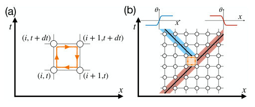
<figcaption class="paper-figure-caption"><b>Fig 1.</b> FIG. 1. Schematic illustration of (a) the definition of a space- time vortex and (b) its multiplicative character and disorder- ing effect on the phase field. (a) The vortex charge on a pla- quette is defined as the oriented sum of the link field [Dµθ]2π along its boundary, where µ = x, t and [· · · ]2π denotes reduc- tion to the principal branch (−π, π]. (b) A spacetime vortex can occur only when the phase field is inhomogeneous; across the event, the local spatial winding carried by a kink changes by the vortex charge, enabling kink branching.</figcaption>
</figure>
<figure class="paper-figure-card">
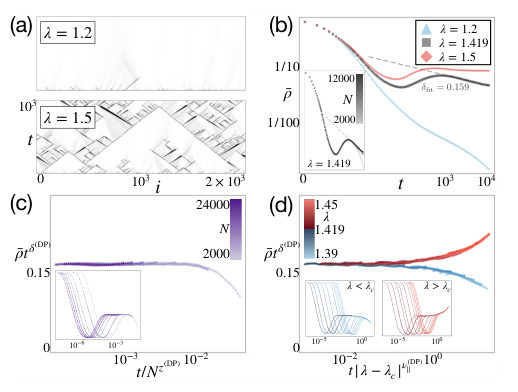
<figcaption class="paper-figure-caption"><b>Fig 2.</b> FIG. 2. Numerical results for the discrete KPZ model us- ing D = 1 2 and dt = 1 4. (a) Spacetime profiles of the lo- cal observable ρ(i, t). At late times, the system either ap- proaches the u = 0 state, or remains spatially inhomoge- neous, with branching structures reminiscent of DP. Pan- els (b)-(d) are averaged over 104 random initial conditions. (b) Log-log plot of ¯ρ(t). For λ ≪λc, ¯ρ decays rapidly, whereas for λ ≫λc it approaches a long-lived active state. At λc ≃1.419, ¯ρ exhibits algebraic decay with fitted expo- nent δfit = 0.159 (over t ∈  103, 104 ), consistent with the DP value δ(DP) = 0.159464. The inset shows the system- size dependence at λ = λc. (c) Finite-size scaling...</figcaption>
</figure>
<figure class="paper-figure-card">
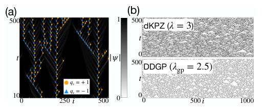
<figcaption class="paper-figure-caption"><b>Fig 3.</b> FIG. 3. Spacetime profiles of (a) the amplitude |ψ| and asso- ciated vortices in the DDGP model at λgp = 1.4, and (b) the order parameter ρ, for the discrete KPZ model at λ = 3 (top) and the DDGP model at λgp = 2.5 (bottom).</figcaption>
</figure>
<figure class="paper-figure-card">
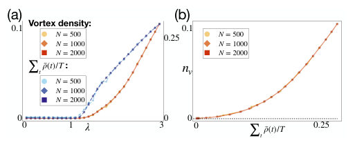
<figcaption class="paper-figure-caption"><b>Fig 4.</b> FIG. 4. Numerical results for (a) the vortex density and spacetime-averaged ρ as functions of λ, and (b) the vortex density as a function of the spacetime-averaged ρ.</figcaption>
</figure>
<figure class="paper-figure-card">
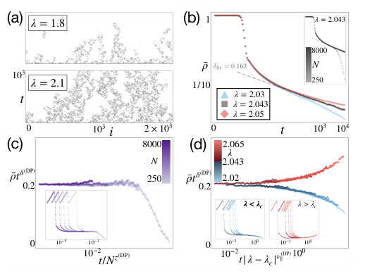
<figcaption class="paper-figure-caption"><b>Fig 5.</b> FIG. 5. Numerical results for the continuous-time limit of the discrete KPZ model with D = 1/2. As a stringent test, we choose the noise ⟨ξ (i, t) ξ (i′, t′)⟩= sin2 [u(i, t)] δ(t −t′)δi,i′: Its variance vanishes at the targeted configuration u = 0, and also at the additional u = π configuration. Nevertheless, the resulting critical scaling remains consistent with DP. The re- sults are averaged over 500 trajectories with fully activated initial conditions [i.e., u (i, t) = π + 10−5]. (a) Spacetime pro- file of ρ(i, t). (b)-(d) Critical scaling analyses showing agree- ment with the DP critical exponents. The data-collapse anal- yses are performed over the time window t ∈[200, 9000]. The...</figcaption>
</figure>
</div>

<p><strong>Summary.</strong> This work establishes a novel mechanism where topological defects in a 1D compact phase model drive the system through a continuous, non-equilibrium phase transition. By analyzing the resulting effective field theory, the authors prove that this critical behavior belongs to the Directed Percolation (DP) universality class. This provides a powerful new theoretical framework for understanding criticality driven by defect proliferation.</p>
<p><strong>Why it may be interesting.</strong> The finding that deterministic, symmetry-driven dynamics can generate emergent non-equilibrium critical behavior belonging to a known universality class like DP is highly relevant for understanding complex many-body systems far from equilibrium.</p>
<details>
<summary>Detailed structure</summary>
<p><strong>Main problem.</strong> The authors aim to uncover a fundamental mechanism for far-from-equilibrium topological phase transitions, distinct from equilibrium critical points.</p>
<p><strong>Main result.</strong> They demonstrate that the competition between vortex-induced disordering and relaxation drives a continuous non-equilibrium transition belonging robustly to the Directed Percolation (DP) universality class.</p>
<p><strong>Method.</strong> The analysis involves constructing an effective field theory via the Martin-Siggia-Rose formalism, followed by coarse-graining and numerical simulation of continuum limits derived from discrete models.</p>
<p><strong>Model / system.</strong> The study uses a one-dimensional compact phase model whose dynamics are governed by deterministic evolution but generate stochasticity through topological defects (vortices). Specific mathematical realizations include the KPZ equation and the driven-dissipative Gross-Pitaevskii equation.</p>
<p><strong>Key observables.</strong> Vortex density ($n_v$), spacetime-averaged order parameter ($ar{
ho}$), and critical exponents ($\delta, z, 
u$).</p>
<p><strong>Important parameters / regimes.</strong> The coupling constants (e.g., $\lambda$ in the KPZ model) that tune the system across the critical point ($\lambda_c$).</p>
<p><strong>Assumptions / limitations.</strong> The analysis relies on the vortex-gas approximation and assumes independent Poisson statistics for topological vortices, which generate an effective multiplicative noise term.</p>
<p><strong>Figures summary.</strong> Figures illustrate numerical data collapse showing that observables like $ar{
ho}$ decay according to exponents characteristic of Directed Percolation (DP) across different models (KPZ, DDGP).</p>
<p><strong>Paper structure.</strong> The paper progresses from defining the physical mechanism involving topological defects and disordering ($ ext{Chunk 1}$) to deriving effective continuum theories (Langevin equations) ($   ext{Chunk 2}$), culminating in numerical verification of DP scaling across multiple related models ($   ext{Chunk 3}$).</p>
</details>
<details>
<summary>Abstract</summary>
<p>We uncover a mechanism for far-from-equilibrium topological phase transitions, via a one-dimensional compact phase model evolving deterministically from random initial conditions. It rests on topology and symmetry rather than on phenomenological postulates: phase compactness permits vortices, and a homogeneous fixed point suppresses their nucleation, with the fixed point itself implied by phase-shift symmetry. The competition between vortex-induced disordering and relaxation toward homogeneity drives a continuous nonequilibrium transition, whose universality class we identify as directed percolation (DP). We demonstrate this by constructing the corresponding effective field theory and numerically confirming DP critical scaling through dynamical-scaling analysis.</p>
</details>
<p><sub><a href="#top">↑ back to top</a></sub></p>

<p><a id="paper-2608.13666"></a></p>
<h3 id="far-from-equilibrium-scaling-of-non-abelian-goldstone-modes">⭐ <a href="http://arxiv.org/abs/2608.13666v1">Far-from-equilibrium scaling of non-abelian Goldstone modes</a></h3>
<p><strong>Highlighted author(s):</strong> Sebastian Diehl<br>
<strong>Authors:</strong> Carl Philipp Zelle, Gustav John, Orla Supple, Romain Daviet, Sebastian Diehl<br>
<strong>Type:</strong> theory · <strong>Category:</strong> statistical mechanics · <strong>PDF:</strong> <a href="https://arxiv.org/pdf/2608.13666v1">https://arxiv.org/pdf/2608.13666v1</a><br>
<strong>Analysis basis:</strong> full PDF text, analyzed in chunks
<strong>Topic relevance:</strong> 🔥 <code>non-equilibrium universality</code> <strong>4/5</strong> · <code>Keldysh / 2PI / non-Gaussian methods</code> <strong>3/5</strong> · <code>driven-dissipative phase transition</code> <strong>3/5</strong> · <code>methods for driven-dissipative</code> <strong>2/5</strong> · <code>analog quantum simulation</code> <strong>1/5</strong> · <code>correlated / nonlocal dissipation</code> <strong>1/5</strong> · <code>scars &amp; prethermalization</code> <strong>1/5</strong></p>
<div class="figure-strip-hint">↔ Scroll figures horizontally</div>
<div class="paper-figures-scroll">
<figure class="paper-figure-card">
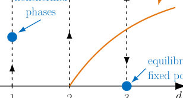
<figcaption class="paper-figure-caption"><b>Fig 1.</b> FIG. 1: Schematic renormalization group flow for the Goldstone modes of the non-Abelian time crystal in various dimensions. In one and two dimensions, the equilibrium axis is unstable: arbitrarily weak nonequilibrium couplings drive the system toward a strongly interacting nonequilibrium fixed point, and no emergent equilibrium exists. In three dimensions, by contrast, the equilibrium line is stable, such that weak nonequilibrium perturbations fade out under coarse graining and effective equilibrium is restored. Above a critical coupling strength, the system undergoes a nonequilibrium phase transition generalizing the three-dimensional KPZ transition to the non-Abelian setting.</figcaption>
</figure>
<figure class="paper-figure-card">
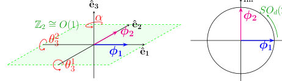
<figcaption class="paper-figure-caption"><b>Fig 2.</b> FIG. 2: Rotating phase Goldstone modes for N = 3. (a) depicts how the Goldstone modes in O(3)/O(1) act on the ground state ψ0 = eiω0t(ϕ1 + iϕ2). The unbroken O(1) symmetry acts as reflection in the ˆe1-ˆe2 plane. A rotation by α in combination with an opposite rotation in the real-imaginary plane (b) leave the ground state invariant and hence form the unbroken symmetry group SOd(2). Additionally, the time dependence eiω0t rotates Re(ψ0) around the ˆe1-ˆe2 plane and hence the phase is referred to as rotating.</figcaption>
</figure>
<figure class="paper-figure-card">
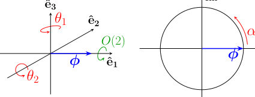
<figcaption class="paper-figure-caption"><b>Fig 3.</b> FIG. 3: Oscillating phase Goldstone modes for N = 3. (a) illustrates how the Goldstone modes in SO(2) × O(3)/O(2) act on the ground state ψ0 = eiωtϕ. The unbroken O(2) symmetry acts as an SO(2) rotation around ˆe1 and a Z2 reflection in the ˆe2-ˆe3 plane. The Goldstone mode α (b) parametrizes the broken SO(2) symmetry equivalent to rotation in the real-imaginary plane. A rotation by α in combination with an opposite rotation in the real-imaginary plan (b) leave the ground state invariant and hence form the unbroken symmetry group SOd(2). Additionally, the time dependence makes Re(ψ0) oscillate in magnitude along the ˆe1 direction and hence is named the oscillating phase.</figcaption>
</figure>
<figure class="paper-figure-card">
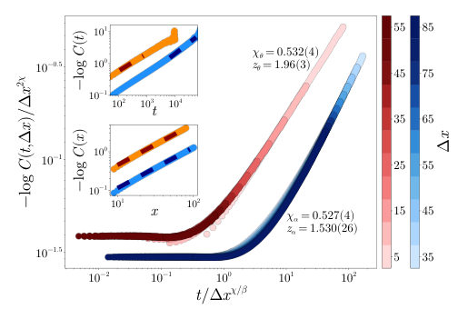
<figcaption class="paper-figure-caption"><b>Fig 4.</b> FIG. 4: Scaling results of the functions Cψ (blue) and Cθ (red) in the rotating phase for N = 3. Extracted exponents are listed in Table I. The main panel shows temporal correlations for spatial separations ∆x, measured in units of the lattice spacing, in steps of 5. The collapse exponents are obtained from the insets: the upper inset shows the time correlation at ∆x = 0, the lower inset the equal-time correlation. We observe weak scaling, here for couplings Zd = 1, Zc = −1, rd = −1, ud = 1, κd = 0.5, uc = −0.2, κc = −0.5, rc = −0.3, and Γ0 = 0.035 with a system size L = 1000. The average is over 15,801 trajectories.</figcaption>
</figure>
<figure class="paper-figure-card">
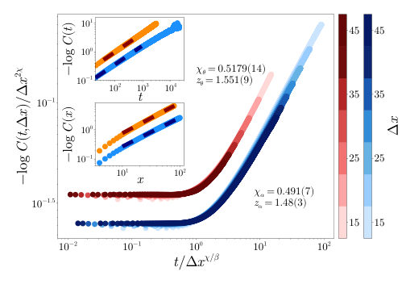
<figcaption class="paper-figure-caption"><b>Fig 5.</b> FIG. 5: Scaling results of the functions Cα (blue) and Cθ (red) in the oscillating phase for N = 3. The presentation and extraction procedure are analogous to Fig. 4; extracted exponents are listed in Table I. Couplings are Zd = 1, Zc = 0, rd = −1, ud = 1, κd = −0.25, uc = 1.6, κc = −0.4, rc = −2.1, and Γ0 = 0.02 in a system with L = 10, 000 sites. The average is over 9,501 trajectories.</figcaption>
</figure>
</div>

<p><strong>Summary.</strong> This paper develops a theoretical framework to study non-Abelian Goldstone modes in far-from-equilibrium phases using nonlinear sigma models. By applying renormalization group analysis, the authors show that low dimensions exhibit novel nonthermal fixed points, characterized by distinct universal scaling exponents for different symmetry components.</p>
<p><strong>Why it may be interesting.</strong> The work provides a powerful extension of KPZ universality into non-Abelian symmetry breaking regimes, which is crucial for understanding universal dynamics in driven quantum systems beyond simple $   ext{SO}(2)$ models.</p>
<details>
<summary>Detailed structure</summary>
<p><strong>Main problem.</strong> The research aims to extend Kardar-Parisi-Zhang (KPZ) physics to describe non-Abelian Goldstone modes arising from continuous symmetry breaking in far-from-equilibrium systems.</p>
<p><strong>Main result.</strong> In low dimensions ($d=1, 2$), weak nonequilibrium driving destabilizes equilibrium and generates strongly coupled nonthermal fixed points; furthermore, the system exhibits unconventional weak dynamic scaling for different Goldstone sectors.</p>
<p><strong>Method.</strong> The study employs non-linear sigma models (NLSMs) derived from open-system path integrals, analyzed using one-loop renormalization group (RG) techniques and corroborated by direct numerical simulations in $1+1$ dimensions.</p>
<p><strong>Model / system.</strong> The model describes non-Abelian time crystals characterized by an SO(2) x O(N) symmetry structure, relevant to driven quantum materials and active matter. The dynamics are analyzed via a Keldysh path integral formulation.</p>
<p><strong>Key observables.</strong> Dynamical critical exponents ($z$), scaling functions for correlation $ ext{C}_{\alpha, heta}(t, r)$, and the stability of fixed points under RG flow.</p>
<p><strong>Important parameters / regimes.</strong> Dimensionality ($d=1, 2$ vs $d>2$), coupling constants ($u_c$), and the nature of the driving (rotating vs. oscillating phases).</p>
<p><strong>Assumptions / limitations.</strong> The analysis assumes an expansion in Goldstone fields and focuses on the deeply ordered limit where curvature fluctuations are negligible.</p>
<p><strong>Figures summary.</strong> Figures schematically illustrate RG flow: weak couplings drive $d=1, 2$ systems to nonthermal fixed points, while $d \geq 3$ restores equilibrium. Simulations confirm distinct scaling laws for $\alpha$ and $    heta$ modes in the rotating phase.</p>
<p><strong>Paper structure.</strong> The paper systematically constructs nonequilibrium NLSMs for different symmetry breaking patterns (rotating/oscillating). It then applies RG analysis to determine dimensional dependence ($d=1, 2$ vs $d>2$) and characterizes the resulting unconventional weak dynamic scaling laws through analytical derivations and numerical verification.</p>
</details>
<details>
<summary>Abstract</summary>
<p>We identify a broad class of nonthermal phases generated by the interplay of continuous symmetry breaking and weak nonequilibrium driving. Extending Kardar-Parisi-Zhang (KPZ) physics beyond the single $SO(2)$ chronon associated with periodically broken time translations, we construct nonequilibrium nonlinear sigma models for $SO(2)\times O(N)$ symmetry, describing non-Abelian time crystals with coexisting temporal and internal order. This symmetry structure arises naturally in driven quantum materials, active matter, and optically induced periodic states. For rotating and oscillating phases, we derive the Goldstone theories and show that chronon-$O(N)$ couplings remain finite deep in the ordered regime. One-loop renormalization group analysis reveals a KPZ-like dimensional structure: in $d=1,2$, arbitrarily weak nonequilibrium perturbations destabilize the equilibrium fixed point and generate strongly coupled nonthermal fixed points, realizing emergent equilibrium breaking. By contrast, for $d > 2$, weak perturbations are irrelevant and effective equilibrium is restored. A central result is unconventional weak dynamic scaling in the rotating phase: strongly coupled Goldstone sectors acquire distinct universal dynamical exponents despite belonging to the same order parameter. We characterize this scaling analytically and corroborate it through direct simulations in $1+1$ dimensions. In the oscillating phase, we recover and extend weak-scaling regimes known from drifting polymers. Finally, compactness and topological defects ultimately destroy long-range order but leave experimentally accessible nonthermal scaling windows. Together, these results extend KPZ universality to non-Abelian symmetry breaking.</p>
</details>
<p><sub><a href="#top">↑ back to top</a></sub></p>

<p><a id="paper-2608.13664"></a></p>
<h3 id="open-system-probes-of-renormalization-group-flow"><a href="http://arxiv.org/abs/2608.13664v1">Open system probes of renormalization group flow</a></h3>
<p><strong>Authors:</strong> Andrew Keefe, Brenden Bowen, Saptarshi Biswas, Albion Lawrence, Nishant Agarwal, Archana Kamal<br>
<strong>Type:</strong> theory · <strong>Category:</strong> statistical mechanics · <strong>PDF:</strong> <a href="https://arxiv.org/pdf/2608.13664v1">https://arxiv.org/pdf/2608.13664v1</a><br>
<strong>Analysis basis:</strong> full PDF text, analyzed in chunks
<strong>Topic relevance:</strong> 🔥 <code>analog quantum simulation</code> <strong>4/5</strong> · 🔥 <code>driven-dissipative phase transition</code> <strong>4/5</strong> · 🔥 <code>methods for driven-dissipative</code> <strong>4/5</strong> · 🔥 <code>non-equilibrium universality</code> <strong>4/5</strong> · <code>Keldysh / 2PI / non-Gaussian methods</code> <strong>3/5</strong> · <code>correlated / nonlocal dissipation</code> <strong>3/5</strong> · <code>quantum measurements</code> <strong>3/5</strong> · <code>Tavis-Cummings &amp; cavity-many-emitter</code> <strong>1/5</strong> · <code>scars &amp; prethermalization</code> <strong>1/5</strong></p>
<div class="figure-strip-hint">↔ Scroll figures horizontally</div>
<div class="paper-figures-scroll">
<figure class="paper-figure-card">
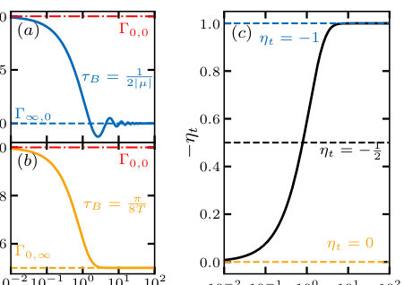
<figcaption class="paper-figure-caption"><b>Fig 1.</b> FIG. 1. Time-dependent dephasing rates on the probe qubit coupled to the TFIM environment varied along the (a) gap (µ) and (b) temperature (T) axes. In both cases, the rate flows from the unstable QCP to the respective stable fixed point along each axis. (c) Exponent determining relative weights of the gap and temperature in the bulk TFIM cor- relator timescale τB.</figcaption>
</figure>
<figure class="paper-figure-card">
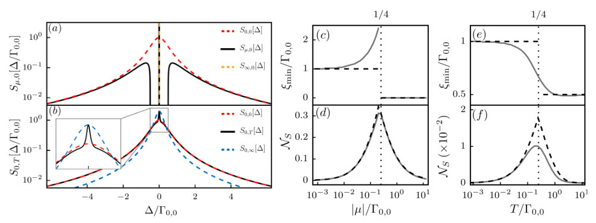
<figcaption class="paper-figure-caption"><b>Fig 2.</b> FIG. 2. Steady-state emission spectrum of the probe qubit along the (a) gap and (b) temperature axes. The corresponding spectral measure NS of the probe qubit calculated along the gap (d) and temperature (f) using the Lorentzian spectra at the three fixed points (dashed-black), with ξ ∈{Γ0,0, Γ∞,0, Γ0,∞} in eq. (11), and an arbitrary Lorentzian profile (solid-grey) as reference Markovian spectra, respectively. Panels (c) and (e) show the zero-frequency widths, ξmin, that minimize the JSD used for calculating the NS shown in panels (d) and (f), respectively.</figcaption>
</figure>
<figure class="paper-figure-card">

<figcaption class="paper-figure-caption"><b>Fig 3.</b> FIG. 3. Directional derivative field Fu,2(µ, T) over a rectangular region in phase space spanned by µ ∈[0, 0.4], T ∈[0, 1.8], while setting g = 1. The inset shows the global structure with the fixed points. The flow in the selected region captures all the non-trivial trends with trivial extrapolation to the fixed points at infinities.</figcaption>
</figure>
<figure class="paper-figure-card">
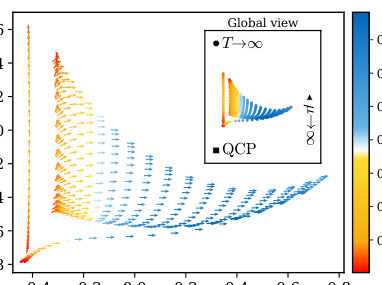
<figcaption class="paper-figure-caption"><b>Fig 4.</b> Figure 3 shows the 2D flow over a rectangular region of the phase diagram, with the flow along the µ-axis (T- axis) shown along the lowest line of arrows (left-most line of arrows). The color of the arrows denotes the magnitude of the flow or change in non-Markovianity. How a linear flow β begets a highly inhomogeneous and anisotropic flow of Fu,2 through the bulk region can be inferred from the dominant eigenvalue of the Jaco- bian J2 [36]: Fu,2 ≈|λ1c1|v1, where J2v1 = λ1v1 with c1 = u · v1. Thus the direction and speed (color) of the flow field are set by v1 and |c1λ1|, respectively. We find that Fu,2(µ, T) captures the off-axis flow away from the QCP, while emphasizing the overall flow...</figcaption>
</figure>
<figure class="paper-figure-card">
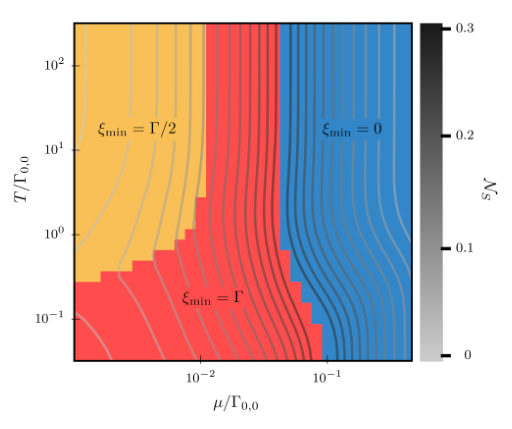
<figcaption class="paper-figure-caption"><b>Fig 5.</b> FIG. 4. Plot showing NS (Contours) using only the spectra at the fixed points as the Markovian ansatz and the corre- sponding ξ (Shading).</figcaption>
</figure>
</div>

<p><strong>Summary.</strong> The authors demonstrate how coupling a simple quantum qubit (probe) to a complex environment (like the TFIM) allows one to map the Renormalization Group flow of the bath. By analyzing non-Markovian dynamics and spectral properties, they show that measurable quantities like dephasing rates or emission spectra encode information about critical exponents and the underlying phase diagram structure.</p>
<p><strong>Why it may be interesting.</strong> This work provides a powerful, measurable diagnostic tool—the probe's dynamics—to access universal properties like critical exponents and RG trajectories that are otherwise difficult to calculate directly in the bulk many-body system.</p>
<details>
<summary>Detailed structure</summary>
<p><strong>Main problem.</strong> The study aims to characterize the Renormalization Group (RG) flow of complex quantum many-body systems by coupling them to a simple, engineered quantum probe.</p>
<p><strong>Main result.</strong> The non-Markovian dynamics and spectral properties of the probe provide a direct, quantitative measure that mirrors the RG flow parameters, allowing for the inference of scaling dimensions near critical points.</p>
<p><strong>Method.</strong> The analysis involves deriving time-dependent master equations (e.g., Redfield or memory kernel approaches) for the probe qubit coupled to an environment modeled by the Transverse Field Ising Model (TFIM).</p>
<p><strong>Model / system.</strong> The system consists of a simple quantum probe (qubit) coupled to a complex, interacting many-body bath (the TFIM), analyzed across its phase diagram parameterized by magnetic field ($\mu$) and temperature ($T$).</p>
<p><strong>Key observables.</strong> Induced dephasing rate $\Gamma_{\mu,T}(t)$, normalized emission spectrum $S[\Delta]$, spectral distances $D(v)$, and the flow vector $F_{u,2}(v)$.</p>
<p><strong>Important parameters / regimes.</strong> The critical point (QCP) of the TFIM, temperature ($T$), magnetic field ($\mu$), and characteristic timescales ($   au_B$).</p>
<p><strong>Assumptions / limitations.</strong> Approximations include using Redfield equations or assuming Gaussian environment states; analyses are performed in various limits like zero-temperature or Statistical Field Theory (SFT).</p>
<p><strong>Figures summary.</strong> Figures illustrate the time evolution of dephasing rates, the 2D flow field $F_{\mu,2}(\mu, T)$ mapping RG trajectories, and steady-state emission spectra compared to Markovian ansatzes.</p>
<p><strong>Paper structure.</strong> The paper progresses by first establishing the dynamics via rate equations (Chunk 1), then generalizing the diagnostics using spectral measures and Principal Component Analysis (PCA) to map flow in parameter space (Chunk 2), followed by detailed frequency-domain analysis of spectra and RG scaling derivations (Chunks 3 &amp; 4).</p>
</details>
<details>
<summary>Abstract</summary>
<p>Open system probes can provide an efficient means to characterize quantum many-body systems by employing them as engineered environments. The key idea is to map long-range spatial correlations of the environment onto dynamical correlations in the evolution of a simple quantum probe. Using the example of a qubit coupled to a transverse-field Ising model, we show how the non-Markovian rate or spectral flow can be used to identify stable and unstable fixed points, infer scaling dimensions of relevant fields, and deduce the renormalization group flow induced by deformations around any fixed point.</p>
</details>
<p><sub><a href="#top">↑ back to top</a></sub></p>

<p><a id="paper-2608.14308"></a></p>
<h3 id="information-spreading-in-diffusion-models-from-effective-field-theory"><a href="http://arxiv.org/abs/2608.14308v1">Information Spreading in Diffusion Models from Effective Field Theory</a></h3>
<p><strong>Authors:</strong> Navonil Neogi, Nabil Iqbal<br>
<strong>Type:</strong> theory · <strong>Category:</strong> statistical mechanics · <strong>PDF:</strong> <a href="https://arxiv.org/pdf/2608.14308v1">https://arxiv.org/pdf/2608.14308v1</a><br>
<strong>Analysis basis:</strong> full PDF text, analyzed in chunks
<strong>Topic relevance:</strong> 🔥 <code>non-equilibrium universality</code> <strong>4/5</strong> · <code>Keldysh / 2PI / non-Gaussian methods</code> <strong>3/5</strong> · <code>driven-dissipative phase transition</code> <strong>3/5</strong> · <code>methods for driven-dissipative</code> <strong>3/5</strong> · <code>analog quantum simulation</code> <strong>2/5</strong> · <code>correlated / nonlocal dissipation</code> <strong>2/5</strong> · <code>quantum measurements</code> <strong>2/5</strong> · <code>scars &amp; prethermalization</code> <strong>1/5</strong></p>
<div class="figure-strip-hint">↔ Scroll figures horizontally</div>
<div class="paper-figures-scroll">
<figure class="paper-figure-card">
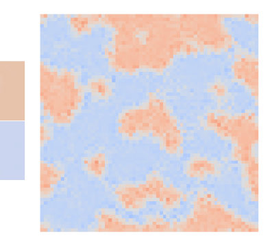
<figcaption class="paper-figure-caption"><b>Fig 1.</b> Figure 1: Images generated at end of reverse process by analytical ELS machine (left) and trained ConvNet model (right). The training images are simply two homogenous grids of ±1 (centre).</figcaption>
</figure>
<figure class="paper-figure-card">
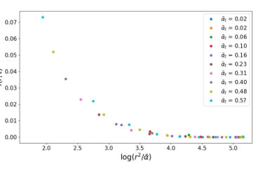
<figcaption class="paper-figure-caption"><b>Fig 2.</b> Figure 2: Verification of diffusive behaviour of ELS machine with 5 × 5 kernel size during reverse process.</figcaption>
</figure>
<figure class="paper-figure-card">
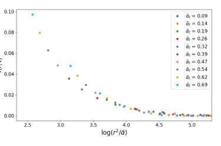
<figcaption class="paper-figure-caption"><b>Fig 3.</b> Figure 3: Verification of diffusive behaviour of learned model during reverse process.</figcaption>
</figure>
<figure class="paper-figure-card">
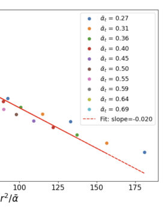
<figcaption class="paper-figure-caption"><b>Fig 4.</b> Figure 4: Spatial dependence of C(r, t); straight line with fixed slope D illustrates Gaussian depen- dence.</figcaption>
</figure>
<figure class="paper-figure-card">
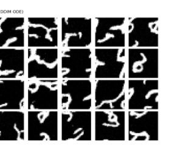
<figcaption class="paper-figure-caption"><b>Fig 5.</b> Figure 5: Images generated by ConvNet with circular padding trained on MNIST dataset.</figcaption>
</figure>
</div>

<p><strong>Summary.</strong> This work bridges generative AI and theoretical physics by treating diffusion model denoising as a physical process described by Effective Field Theory. By applying EFT, the authors derive simplified equations governing how information spreads during sample generation. This provides a powerful, physically grounded framework for analyzing deep learning models.</p>
<p><strong>Why it may be interesting.</strong> While applied to deep learning, the core methodology—using EFT to simplify complex non-equilibrium dynamics governed by local interactions—is highly relevant to understanding relaxation processes in many-body quantum systems or open quantum systems far from equilibrium.</p>
<details>
<summary>Detailed structure</summary>
<p><strong>Main problem.</strong> The paper applies Effective Field Theory (EFT) principles to analyze how information spreads during the reverse denoising process of score-matching diffusion models.</p>
<p><strong>Main result.</strong> The mutual information between two points in the generated data is shown to grow according to a simple effective field theory prediction derived from Brownian motion dynamics at long times/distances.</p>
<p><strong>Method.</strong> The authors use systematic derivative expansions (EFT) on the score function's evolution equation, simplifying complex dynamics by exploiting locality and symmetry constraints.</p>
<p><strong>Model / system.</strong> The system is a convolutional diffusion model trained to generate data samples from a distribution p(phi). The analysis focuses on the stochastic differential equation governing the reverse denoising process.</p>
<p><strong>Key observables.</strong> Mutual information between two points (MI), the score function $\pi(\phi, t)$, and the correlation function $G(z, t)$.</p>
<p><strong>Important parameters / regimes.</strong> The noise schedule parameter ($ar{\alpha}_t$), spatial separation ($r$ or $z$), and time scale ($t$).</p>
<p><strong>Assumptions / limitations.</strong> The EFT approach assumes that long-distance/long-time dynamics are governed by a low-order derivative expansion, which is rigorously tested in the scaling limit $\lambda 	o \infty$.</p>
<p><strong>Figures summary.</strong> Not specified.</p>
<p><strong>Paper structure.</strong> The paper progresses from establishing the physical analogy between diffusion dynamics and field theory to deriving simplified evolution equations via systematic expansions (EFT), culminating in solving the resulting diffusion equation for correlation functions.</p>
</details>
<details>
<summary>Abstract</summary>
<p>We study score-matching diffusion models with a convolutional architecture. We argue that the inductive bias of locality means that the machinery of effective field theory from physics can be usefully applied to describe the denoising dynamics. We apply this formalism first to a simple toy example which permits an analytical description, and thereafter to MNIST, and show that in both cases, the mutual information between two points grows in a manner predicted by a simple effective field theory of Brownian motion.</p>
</details>
<p><sub><a href="#top">↑ back to top</a></sub></p>

<p><a id="paper-2608.14416"></a></p>
<h3 id="extinction-drives-emergent-metastability-in-complex-ecosystems"><a href="http://arxiv.org/abs/2608.14416v1">Extinction drives emergent metastability in complex ecosystems</a></h3>
<p><strong>Authors:</strong> Jong Il Park, Tim Rogers, Joseph W. Baron<br>
<strong>Type:</strong> theory · <strong>Category:</strong> disordered systems and neural networks · <strong>PDF:</strong> <a href="https://arxiv.org/pdf/2608.14416v1">https://arxiv.org/pdf/2608.14416v1</a><br>
<strong>Analysis basis:</strong> full PDF text, analyzed in chunks
<strong>Topic relevance:</strong> 🔥 <code>Keldysh / 2PI / non-Gaussian methods</code> <strong>4/5</strong> · <code>correlated / nonlocal dissipation</code> <strong>3/5</strong> · <code>methods for driven-dissipative</code> <strong>3/5</strong> · <code>non-equilibrium universality</code> <strong>3/5</strong> · <code>driven-dissipative phase transition</code> <strong>2/5</strong> · <code>quantum measurements</code> <strong>2/5</strong> · <code>Frenkel-Kontorova</code> <strong>1/5</strong> · <code>analog quantum simulation</code> <strong>1/5</strong></p>
<div class="figure-strip-hint">↔ Scroll figures horizontally</div>
<div class="paper-figures-scroll">
<figure class="paper-figure-card">
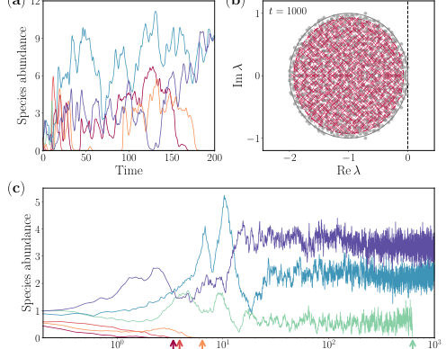
<figcaption class="paper-figure-caption"><b>Fig 1.</b> FIG. 1. Distinct dynamical behaviours and eigen- value spectra of the surviving species. (a) Determinis- tic (V →∞) grLV [see Eq. (10)] (c) rule-based dynamics [see Eq. (6)] for six representative species. Both models are simu- lated with an identical interaction matrix J, with consistent colour-coding across panels for each species. (b) Eigenvalue spectrum of the reduced interaction matrices J⋆(see text for definition) for the surviving communities at time t = 1000. System parameters are chosen such that May’s stability cri- terion predicts chaotic behaviour. While the spectrum of the deterministic model (grey circles) reaches the stability bound- ary (zero), the rule-based model (red...</figcaption>
</figure>
<figure class="paper-figure-card">
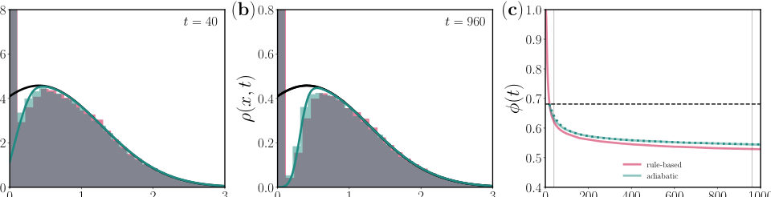
<figcaption class="paper-figure-caption"><b>Fig 2.</b> FIG. 2. Abundance distributions and survival probabilities over time. Abundance distributions ρ(x, t) obtained from rule-based (red) and adiabatic (green) dynamics at (a) t = 40 and (b) t = 960. Histograms are computed from the numerical simulations of the rule-based [see Eq. (6)] and adiabatic [see Eq. (17)] dynamics. Solid lines represent theoretical predictions from the deterministic fixed point (black) [see Eq. (16)] and adiabatic approximation (green) [see Eq. (3)]. (c) Survival probabilities ϕ(t) as a function of time. Shaded areas indicate the time windows corresponding to the distributions in (a) and (b). Dashed and dotted lines are predictions from deterministic and adiabatic...</figcaption>
</figure>
<figure class="paper-figure-card">
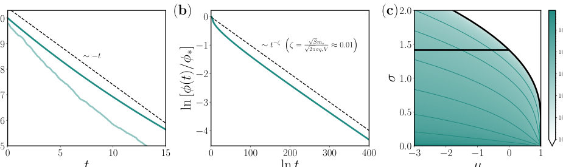
<figcaption class="paper-figure-caption"><b>Fig 3.</b> FIG. 3. Asymptotic behaviours of extinction dynamics and decay exponents. Survival probabilities ϕ(t) at (a) short and (b) long timescales. The green transparent line represents results from the adiabatic simulation [see Eq. (17)], while the green solid lines indicate numerical solutions of the theoretical prediction [see Eq. (3)]. Black dashed lines denote the predicted asymptotic limits. (c) Decay exponents scaled by √</figcaption>
</figure>
<figure class="paper-figure-card">
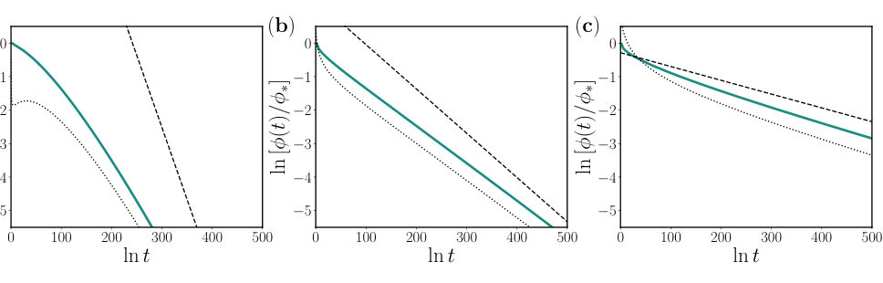
<figcaption class="paper-figure-caption"><b>Fig 4.</b> FIG. 4. Survival probabilities and asymptotes with corrections. Survival probabilities are shown for different parameter sets: (a) (µ, σ) = (−1.6, 0.4), (b) (µ, σ) = (−0.6, 0.8), and (c) (µ, σ) = (0.4, 1.2). Solid green lines represents numerical solutions derived from the adiabatic theory. Dashed lines denote power-law asymptotes with the leading-order decay exponent ζ from Eq. (5), while dotted lines including subleading corrections within ζ(t).</figcaption>
</figure>
</div>

<p><strong>Summary.</strong> This paper analyzes how intrinsic demographic noise stabilizes complex ecosystems by causing the extinction of low-abundance species. Using advanced theoretical tools like field theory, the authors show that this process leads to a robust metastability characterized by a power-law decay in community diversity over time. This demonstrates that stochastic fluctuations can stabilize systems predicted to be chaotic deterministically.</p>
<p><strong>Why it may be interesting.</strong> The mathematical techniques used—such as deriving effective stochastic equations and analyzing non-equilibrium relaxation via field theory—are highly relevant to understanding open quantum systems where environmental noise drives slow decoherence or escape from metastable states.</p>
<details>
<summary>Detailed structure</summary>
<p><strong>Main problem.</strong> The study investigates how intrinsic demographic stochasticity affects the stability of large complex ecosystems, challenging conventional deterministic stability criteria.</p>
<p><strong>Main result.</strong> Stochastic fluctuations cause low-abundance species to rapidly go extinct, leading to higher systemic stability and an emergent metastability characterized by a power-law decay in surviving species fraction.</p>
<p><strong>Method.</strong> The authors employ field theory techniques, including the Martin-Siggia-Rose-De Dominicis-Janssen formalism and WKB ansatz, applied to derive effective stochastic differential equations for the system's dynamics.</p>
<p><strong>Model / system.</strong> The model is a rule-based simulation of complex ecosystems with species abundances governed by generalized Lotka-Volterra type interactions. The analysis compares this stochastic system against its deterministic limit.</p>
<p><strong>Key observables.</strong> Fraction of surviving species over time ($\phi(t)$), abundance distributions ($
ho(x, t)$), and the eigenvalue spectrum of reduced interaction matrices ($J^\star$).</p>
<p><strong>Important parameters / regimes.</strong> The ratio controlling noise magnitude ($\sqrt{S}/V$), system size ($V$), and the decay exponent $\zeta$ governing long-time behavior.</p>
<p><strong>Assumptions / limitations.</strong> Key assumptions include using a mean-field reduction for the many-species system and employing an adiabatic approximation, assuming fast relaxation to deterministic equilibrium before slow stochastic extinction occurs.</p>
<p><strong>Figures summary.</strong> Figures compare dynamical behaviors between deterministic and rule-based models, highlighting the power-law decay of survival probability ($\phi(t)$) in the stochastic case compared to other theoretical predictions.</p>
<p><strong>Paper structure.</strong> The paper progresses from establishing the problem (stochasticity vs. determinism) to developing advanced field-theoretic tools (MSRDJ formalism, WKB ansatz) to derive an effective single-species dynamics equation, culminating in the analysis of long-time asymptotic decay laws for survival probability.</p>
</details>
<details>
<summary>Abstract</summary>
<p>Extinction is inevitable; every species eventually dies out, impacting the ecosystem it is part of. Over the past few decades, extensive research stemming from the stability-diversity debate has addressed how species diversity contributes to the stability of large ecosystems. However, conventional stability criteria often rely on deterministic frameworks, overlooking the intrinsic population fluctuations that allow any species to go extinct by chance. In this paper, we incorporate demographic stochasticity into large complex ecosystems with a rule-based model. We demonstrate that such demographic fluctuations rapidly prune the low-abundance species from the ecological community, thereby securing higher systemic stability. By developing a bottom-up theory to characterise the statistics of extinction dynamics, we discover that the fraction of surviving species exhibits an anomalous heavy-tailed decay over time, revealing the emergence of remnant communities with robust metastability. Our results highlight that when demographic fluctuations are accounted for, ecosystems self-stabilise by reducing their diversity even when they are predicted to be chaotic in the deterministic limit.</p>
</details>
<p><sub><a href="#top">↑ back to top</a></sub></p>

<p><a id="paper-2608.14493"></a></p>
<h3 id="measurement-feedback-quantum-information-engine-coherence-transition-interference-and-correlated-work-statistics"><a href="http://arxiv.org/abs/2608.14493v1">Measurement-Feedback Quantum Information Engine: Coherence-Transition Interference and Correlated Work Statistics</a></h3>
<p><strong>Authors:</strong> Yingying Hong, Dehua Liu, Jinfeng Wei, Leilei Yan, Jianhui Wang<br>
<strong>Type:</strong> theory · <strong>Category:</strong> statistical mechanics · <strong>PDF:</strong> <a href="https://arxiv.org/pdf/2608.14493v1">https://arxiv.org/pdf/2608.14493v1</a><br>
<strong>Analysis basis:</strong> full PDF text, analyzed in chunks
<strong>Topic relevance:</strong> 🔥 <code>Full counting statistics</code> <strong>4/5</strong> · 🔥 <code>quantum measurements</code> <strong>4/5</strong> · <code>methods for driven-dissipative</code> <strong>3/5</strong> · <code>non-equilibrium universality</code> <strong>3/5</strong> · <code>driven-dissipative phase transition</code> <strong>2/5</strong> · <code>Keldysh / 2PI / non-Gaussian methods</code> <strong>1/5</strong> · <code>correlated / nonlocal dissipation</code> <strong>1/5</strong> · <code>interference shaping light</code> <strong>1/5</strong></p>
<div class="figure-strip-hint">↔ Scroll figures horizontally</div>
<div class="paper-figures-scroll">
<figure class="paper-figure-card">
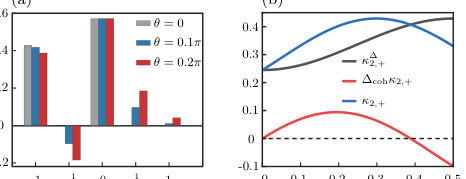
<figcaption class="paper-figure-caption"><b>Fig 1.</b> FIG. 2. Mechanism-resolved symmetric FCS statistics for the unitary branch. (a) The five weights at three measurement angles. Integer-quantum peaks are produced by population transfer through the nonadiabatic channel; the equal-and- opposite half-quantum pair is the measurement-coherence interference. (b) Dephased second-cumulant baseline κ∆ 2,+, signed coherent correction ∆cohκ2,+, and their sum. The sign change of the coherent correction demonstrates that coher- ence can either enhance or suppress work fluctuations. Pa- rameters are τc = 0.1, τe = 0.01, ωc = 20π, ωh = 30π, and ℏ= 1.</figcaption>
</figure>
<figure class="paper-figure-card">
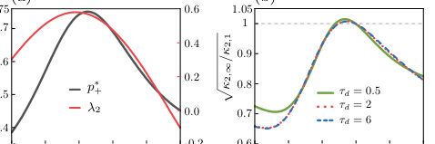
<figcaption class="paper-figure-caption"><b>Fig 2.</b> FIG. 3. Outcome memory and accumulated-work fluctu- ations. (a) Stationary driven-branch probability p∗ + and subleading memory eigenvalue λ2 for τd = 6. (b) Ratio √</figcaption>
</figure>
<figure class="paper-figure-card">
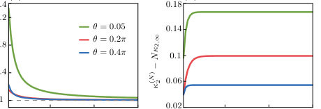
<figcaption class="paper-figure-caption"><b>Fig 3.</b> FIG. 4. Exact finite-cycle convergence at τd = 2 for sta- tionary initialization. (a) Per-cycle second FCS cumulant normalized by its long-cycle value. (b) Boundary difference κ(N) 2 −Nκ2,∞. The plateau is the boundary contribution; the remaining memory contribution decays exponentially. Work is measured in units of ℏωc.</figcaption>
</figure>
<figure class="paper-figure-card">
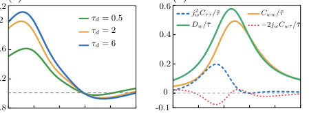
<figcaption class="paper-figure-caption"><b>Fig 4.</b> FIG. 5. Fixed-time symmetric-FCS second-cumulant rate. (a) Exact Dw divided by the naive completed-cycle rescaling κ2,∞/¯τ for τd = 0.5, 2, and 6. The horizontal dashed line denotes equality. (b) Completed-cycle, work–duration, and duration contributions in Eq. (45) at τd = 2. Work and time are measured in units of ℏωc and γ−1, respectively.</figcaption>
</figure>
<figure class="paper-figure-card">
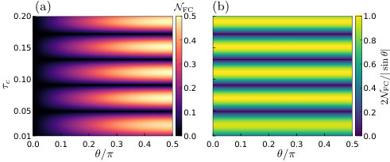
<figcaption class="paper-figure-caption"><b>Fig 5.</b> FIG. 6. Coherence–transition interference landscape. (a) Symmetric-FCS negativity versus measurement angle and compression duration at fixed τe = 0.01. (b) Ratio to the maximal coherence-only bound, 2NFC/| sin θ| = 2| Re(UegU ∗ ee)| ≤1. At θ = 0, the displayed ratio is defined by its continuous limit. The remaining parameters are ωc = 20π, ωh = 30π, and ℏ= 1.</figcaption>
</figure>
</div>

<p><strong>Summary.</strong> This work develops a detailed theory of work statistics in measurement-feedback quantum engines. By using Full Counting Statistics, the authors reveal that initial system coherence generates measurable interference terms in the work distribution and its fluctuations. The findings establish a direct link between coherent dynamics, memory effects from feedback, and fundamental thermodynamic quantities like the entropy rate.</p>
<p><strong>Why it may be interesting.</strong> It provides a rigorous framework connecting non-equilibrium thermodynamics (work fluctuations) with quantum control mechanisms (measurement/feedback), which is highly relevant for understanding energy extraction in open quantum systems.</p>
<details>
<summary>Detailed structure</summary>
<p><strong>Main problem.</strong> The paper develops a mechanism-resolved theory for work statistics and temporal correlations in quantum information engines that utilize measurement and feedback.</p>
<p><strong>Main result.</strong> It shows that the conditional work separates into population transfer and a phase-sensitive coherence–transition interference term, linking coherent work statistics to entropy rate reduction via memory effects.</p>
<p><strong>Method.</strong> The analysis employs Symmetric Full Counting Statistics (FCS) and Markov chain theory applied to outcome records to calculate cumulants and entropy costs.</p>
<p><strong>Model / system.</strong> The system is a quantum information engine modeled by a qubit undergoing cycles involving projective measurements and time evolution through driven strokes and cold contacts. The dynamics are governed by specific Hamiltonians ($H_0, H_h$).</p>
<p><strong>Key observables.</strong> Work statistics (mean work, variance, cumulants), temporal correlations ($ ext{Cov}(I_n, I_{n+\ell})$), and reversible reset costs (entropy rate).</p>
<p><strong>Important parameters / regimes.</strong> Initial energy coherence ($
ho_{ge}$), cycle number ($N$), fixed laboratory time ($T$), and the nonstationary eigenvalue ($\lambda_2$).</p>
<p><strong>Assumptions / limitations.</strong> The outcome record is assumed to form an exact time-homogeneous first-order Markov chain, and asymptotic limits are taken for entropy calculations.</p>
<p><strong>Figures summary.</strong> Figures illustrate the five-point quasiprobability weights generated by coherence interference (Figure 2a) and show how this interference can suppress work fluctuations (Figure 2b).</p>
<p><strong>Paper structure.</strong> The paper progresses from defining the physical process using measurement feedback, to calculating mean work via decomposition into population and coherence terms, then applying FCS to resolve higher-order statistics, and finally deriving memory corrections and entropy rate limits.</p>
</details>
<details>
<summary>Abstract</summary>
<p>Measurement and feedback jointly prepare coherence and select finite-time dynamics in quantum information engines. Complementing a companion experimental realization, we develop a mechanism-resolved theory of the resulting work statistics and temporal correlations. The con?ditional work separates into population transfer and a phase-sensitive coherence-transition inter?ference term. Symmetric full counting statistics maps this interference to an equal-and-opposite half-quantum pair in the work quasiprobability, entering odd moments while leaving even moments fixed by endpoint mixing. An outcome-resolved tilted kernel then propagates these statistics through the correlated measurement record, yielding finite-cycle and fixed-time fluctuation corrections. The same memory reduces the reversible record-reset cost from the one-symbol entropy to the entropy rate. Our results link coherent work statistics, feedback memory, and information thermodynamics</p>
</details>
<p><sub><a href="#top">↑ back to top</a></sub></p>

<p><a id="paper-2608.14469"></a></p>
<h3 id="current-fluctuations-in-a-non-additive-open-quantum-system-breakdown-of-the-quantum-jump-approach"><a href="http://arxiv.org/abs/2608.14469v1">Current fluctuations in a non-additive open quantum system: breakdown of the quantum-jump approach</a></h3>
<p><strong>Authors:</strong> Ilia Khomchenko, Saulo V. Moreira, Emanuel Schwarzhans, Mark T. Mitchison, Tony J. G. Apollaro<br>
<strong>Type:</strong> theory · <strong>Category:</strong> statistical mechanics · <strong>PDF:</strong> <a href="https://arxiv.org/pdf/2608.14469v1">https://arxiv.org/pdf/2608.14469v1</a><br>
<strong>Analysis basis:</strong> full PDF text, analyzed in chunks
<strong>Topic relevance:</strong> 🔥 <code>methods for driven-dissipative</code> <strong>4/5</strong> · <code>correlated / nonlocal dissipation</code> <strong>3/5</strong> · <code>quantum measurements</code> <strong>3/5</strong> · <code>Full counting statistics</code> <strong>2/5</strong> · <code>Keldysh / 2PI / non-Gaussian methods</code> <strong>2/5</strong> · <code>driven-dissipative phase transition</code> <strong>2/5</strong> · <code>analog quantum simulation</code> <strong>1/5</strong> · <code>non-equilibrium universality</code> <strong>1/5</strong></p>
<div class="figure-strip-hint">↔ Scroll figures horizontally</div>
<div class="paper-figures-scroll">
<figure class="paper-figure-card">
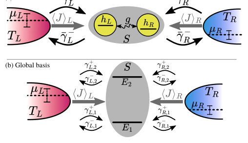
<figcaption class="paper-figure-caption"><b>Fig 1.</b> FIG. 1. Double quantum dot connected to two fermionic reservoirs, denoted as a system S. Each dot contains only one energy level hL,R and the dots are coherently coupled with tunnel coupling g. Both dots can exchange particles independently with reservoirs (L, R) at temperatures TL,R and chemical potentials µL,R, respectively. The double-dot quantum system is coupled to the two thermal baths, which ensures stationary-state currents ⟨J⟩L,R flowing through the system. The upper panel sketches the setup in the local ba- sis and the lower panel in the global basis. The rates ¯γ± α , in the upper panel, characterise the jump processes between the reservoirs and the individual site α; whereas, in...</figcaption>
</figure>
<figure class="paper-figure-card">
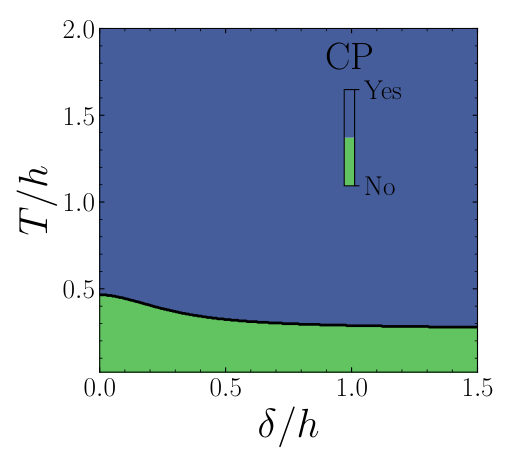
<figcaption class="paper-figure-caption"><b>Fig 2.</b> FIG. 2. Complete positivity (CP) of the quantum map Mc,j 0 in the site basis as a function of the local energy levels de- tuning δ/h and temperature T = TL = TR. Parameters: h = 1, g = 0.5, Γ = 0.02, Ω= 100, µL/h = 0.7, µR/h = 0.0. The blue colour denotes that the quantum map is CP and the obtained rates ˜γ± α are smaller than the actual rates ¯γ± α , i.e. ¯γ± α &gt; ˜γ± α (“Yes”), while the green one corresponds to a non-CP quantum map (“No”) with positive or nega- tive obtained rates. This plot is invariant with respect to time between jumps ∆t, which we verified for 1001 values of ∆t ∈[10−3, 103].</figcaption>
</figure>
<figure class="paper-figure-card">
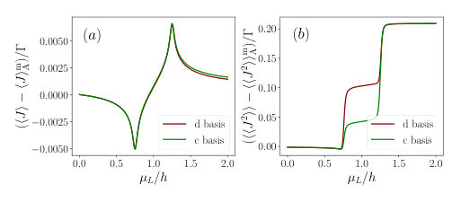
<figcaption class="paper-figure-caption"><b>Fig 3.</b> FIG. 4. Difference in steady-state current (⟨J⟩−⟨J⟩m A)/Γ (left) and its fluctuations (⟨⟨J2⟩⟩−⟨⟨J2⟩⟩m A)/Γ (right) in the non-additive picture with the variable chemical potential µL. The parameters are the same as in Fig. 3.</figcaption>
</figure>
<figure class="paper-figure-card">
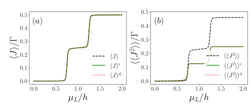
<figcaption class="paper-figure-caption"><b>Fig 4.</b> FIG. 3. Average steady-state current ⟨J⟩/Γ (a) and its fluc- tuations ⟨⟨J2⟩⟩/Γ (b) through the double quantum dot with the variable chemical potential of the left reservoir µL/h. The the subscript c and d refers to the site and energy eigen- basis, respectively. Parameters: h = 1, δ = 0.0, g = 0.5, ∆= p</figcaption>
</figure>
<figure class="paper-figure-card">
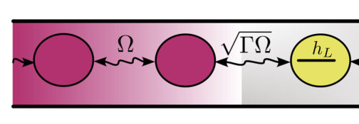
<figcaption class="paper-figure-caption"><b>Fig 5.</b> FIG. 5. Model of reservoirs as 1D tight-binding chains, where Ωand √</figcaption>
</figure>
</div>

<p><strong>Summary.</strong> The paper investigates current fluctuations in an open quantum system where reservoir coupling introduces non-additive dynamics. It finds that standard quantum jump techniques fail under perfect measurement conditions due to the nature of the cross-dissipative terms. However, by considering imperfect detection, the authors demonstrate a consistent framework that successfully reproduces established results from the Landauer-Büttiker theory.</p>
<p><strong>Why it may be interesting.</strong> This work is highly relevant to AMO physics and open quantum systems as it rigorously defines the limitations of common theoretical tools (like QJA) when modeling complex, interacting environments that lead to non-Markovian or non-additive dissipation.</p>
<details>
<summary>Detailed structure</summary>
<p><strong>Main problem.</strong> The paper assesses the validity of the quantum-jump formalism for calculating current fluctuations in open quantum systems whose dynamics are governed by non-additive master equations.</p>
<p><strong>Main result.</strong> While perfect jump detection fails to reproduce a completely positive evolution, allowing for imperfect jump detection enables an additive unravelling that successfully reproduces results from the Landauer-Büttiker formalism.</p>
<p><strong>Method.</strong> The study compares theoretical predictions derived from the quantum master equation (QME) with those from the Landauer-Büttiker (LB) approach, focusing on analyzing the complete positivity of associated quantum maps.</p>
<p><strong>Model / system.</strong> The model is a double quantum dot system coupled to two fermionic reservoirs (Left and Right), whose dynamics are described by a non-additive Lindblad master equation incorporating cross-dissipative terms.</p>
<p><strong>Key observables.</strong> Average steady-state current ($\langle J 
angle$) and associated current fluctuations ($\langle\langle J^2 
angle
angle$).</p>
<p><strong>Important parameters / regimes.</strong> Tunnel coupling ($g$), detuning ($\delta$), chemical potentials ($\mu_{L/R}$), and the regime of detection (perfect vs. imperfect).</p>
<p><strong>Assumptions / limitations.</strong> The analysis assumes asymptotic dynamics, compares results across different bases (local vs. global), and crucially distinguishes between perfect and imperfect quantum jump detection.</p>
<p><strong>Figures summary.</strong> Figures illustrate the dependence of current and fluctuations on detuning ($\delta$) and tunnel coupling ($g$), and show diagnostics related to the complete positivity (CP) of quantum maps under various conditions.</p>
<p><strong>Paper structure.</strong> The paper establishes the non-additive QME, compares it against the LB formalism for currents/fluctuations, tests the applicability of the standard quantum jump approach by checking CP criteria in both perfect and imperfect detection limits, and concludes with a successful framework for reproducing observables via additive unravellings.</p>
</details>
<details>
<summary>Abstract</summary>
<p>Open quantum system dynamics is efficiently described by the quantum master equation formalism. Therein, quantum master equations in Lindblad form constitute an important subclass describing Markovian dynamics. When an open quantum system is in an out-of-equilibrium state, an exchange of particles between the open system and reservoirs takes place yielding to a non-zero average net current and associated current fluctuations, which can be characterised with the quantum jump formalism for quantum master equations expressed in Lindblad form. However, a large class of quantum master equations cannot be described by Lindblad dynamics. Here we assess the validity and the effectiveness of the quantum jump formalism when the dissipators in the quantum master equation describe a non-additive, open quantum system dynamics. We find that an additive unravelling of the non-additive quantum master equation does not generate a completely-positive dynamics in the scenario of perfect jump detection. Nevertheless, allowing for an imperfect jump detection scenario, we find that an additive unravelling is possible that reproduces the current and the fluctuations obtained via the Landauer-Büttiker formalism.</p>
</details>
<p><sub><a href="#top">↑ back to top</a></sub></p>

<p><a id="paper-2608.14468"></a></p>
<h3 id="to-math60math-or-not-to-math61math-noise-induced-escape-and-nonlinear-damping-stabilization-in-a-parity-time-dimer"><a href="http://arxiv.org/abs/2608.14468v1">To $\mathcal{PT}$ or not to $\mathcal{PT}$: Noise-induced escape and nonlinear-damping stabilization in a parity-time dimer</a></h3>
<p><strong>Authors:</strong> Richelle Jade L. Tuquero, Kilian Seibold, Oded Zilberberg<br>
<strong>Type:</strong> theory · <strong>Category:</strong> other · <strong>PDF:</strong> <a href="https://arxiv.org/pdf/2608.14468v1">https://arxiv.org/pdf/2608.14468v1</a><br>
<strong>Analysis basis:</strong> full PDF text, analyzed in chunks
<strong>Topic relevance:</strong> 🔥 <code>Keldysh / 2PI / non-Gaussian methods</code> <strong>4/5</strong> · <code>driven-dissipative phase transition</code> <strong>3/5</strong> · <code>methods for driven-dissipative</code> <strong>3/5</strong> · <code>Tavis-Cummings &amp; cavity-many-emitter</code> <strong>2/5</strong> · <code>non-equilibrium universality</code> <strong>2/5</strong> · <code>analog quantum simulation</code> <strong>1/5</strong> · <code>correlated / nonlocal dissipation</code> <strong>1/5</strong> · <code>quantum measurements</code> <strong>1/5</strong> · <code>scars &amp; prethermalization</code> <strong>1/5</strong></p>
<div class="figure-strip-hint">↔ Scroll figures horizontally</div>
<div class="paper-figures-scroll">
<figure class="paper-figure-card">
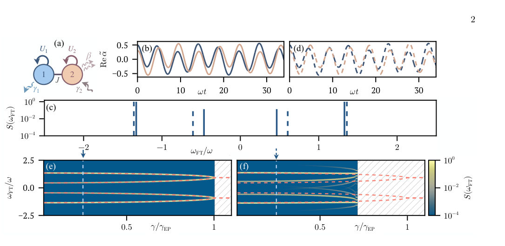
<figcaption class="paper-figure-caption"><b>Fig 1.</b> FIG. 1. Linear versus nonlinear gain–loss dimer. (a) Schematic of the dimer described by Eqs. (1) and (2); Hamiltonian couplings and dissipative channels are indicated by solid and wiggly lines, respectively. (b) Time evolution of the quadratures Re(˜αj) in the linear model (U1 = U2 = 0). (c) Corresponding power spectral densities for the linear [solid, from (b)] and nonlinear [dashed, from (d)] dynamics, with the linear peaks occurring at ±ω± [cf. Eq. (3)]. (d) Same as (b) for finite Duffing nonlinearities U1 = U2 = 0.1 and β = 0. (e) Power spectral density versus the gain–loss rate γ for the linear model, with the analytical eigenfrequencies ±ω± overlaid as red dashed lines up to the...</figcaption>
</figure>
<figure class="paper-figure-card">
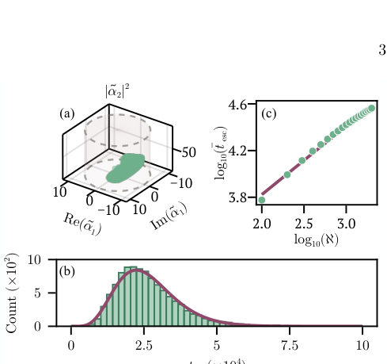
<figcaption class="paper-figure-caption"><b>Fig 2.</b> FIG. 2. Deterministic confinement and noise-induced first- passage escape. (a) Projection of the initial-condition space onto (Re(˜α1), Im(˜α1), |˜α2|2), showing initial conditions that yield bounded deterministic trajectories (green), together with the escape threshold |˜αj|2 = 102 (cylinder). (b) Dis- tribution of first-passage escape times, tesc, for Ntraj = 104</figcaption>
</figure>
<figure class="paper-figure-card">
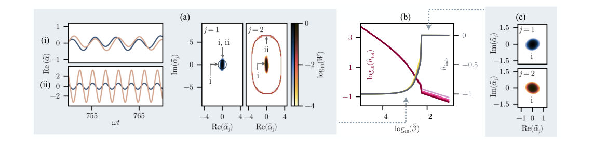
<figcaption class="paper-figure-caption"><b>Fig 3.</b> FIG. 3. Restoring stability via nonlinear damping. (a, left) At nonlinear damping strength ˜β = 1.7 × 10−3, the long-time dynamics evolve into either (i) a low-amplitude PT -like limit cycle or (ii) a high-amplitude, population-imbalanced limit cycle, for representative initial conditions (˜α1, ˜α2) = (0.5+0.2i, 0.3+0.1i) and (2.2+0.2i, 2.0+0.2i), respectively. (a, right) Long-time single-mode phase-space distributions at ˜β = 1.7×10−3, with gain–loss noise retained, showing probability localized around two coexisting limit-cycle attractors (marked by symbols). (b) Macroscopic observables, namely the total rescaled intensity ˜ntot and normalized population imbalance ˜nimb, as functions of...</figcaption>
</figure>
</div>

<p><strong>Summary.</strong> The paper investigates the robustness of Parity-Time ($\mathcal{PT}$) symmetric systems against real-world imperfections like nonlinearity and noise. It demonstrates that these factors cause excitations to escape transiently, invalidating the simple reliance on spectral $\mathcal{PT}$ symmetry for stability. True long-term stochastic stability is achieved only by introducing a genuine restoring dissipation mechanism.</p>
<p><strong>Why it may be interesting.</strong> This work provides a crucial theoretical refinement for open quantum systems, showing that simple spectral conditions (like $\mathcal{PT}$ symmetry) are insufficient predictors of long-term physical stability when realistic noise and nonlinearities are present.</p>
<details>
<summary>Detailed structure</summary>
<p><strong>Main problem.</strong> The study reevaluates the global long-time dynamics of Parity-Time ($\mathcal{PT}$) symmetric systems when realistic nonlinearities and noise are introduced, challenging the assumption that spectral $\mathcal{PT}$ symmetry guarantees stability.</p>
<p><strong>Main result.</strong> Linear $\mathcal{PT}$-unbroken phases are purely transient due to noise-induced escape; global stochastic stability is recovered by introducing a non-Hermitian restoring dissipation (like two-photon loss), which governs attraction rather than spectral symmetry.</p>
<p><strong>Method.</strong> The analysis uses the Truncated Wigner Approximation (TWA) to map the Lindblad master equation onto stochastic phase-space equations, analyzing deterministic flow and first-passage escape statistics.</p>
<p><strong>Model / system.</strong> The system is a nonlinear dimer of coupled resonators exhibiting gain and loss ($\mathcal{PT}$ symmetry). The dynamics are governed by a Lindblad master equation incorporating Duffing nonlinearity and various damping channels (single/two-photon loss).</p>
<p><strong>Key observables.</strong> Phase-space trajectories, first-passage escape time distribution ($p(t)$), spectral eigenfrequencies, and the existence of phase-space attractors.</p>
<p><strong>Important parameters / regimes.</strong> Gain-loss rate ($\gamma$), nonlinear coupling strength (Duffing $U_j$), and two-photon loss coefficient ($eta$).</p>
<p><strong>Assumptions / limitations.</strong> The analysis relies on mapping to stochastic equations via TWA, and the distinction is made between local spectral stability and global stochastic attraction.</p>
<p><strong>Figures summary.</strong> Figures compare linear vs. nonlinear dynamics, show first-passage escape time scaling laws (algebraic dependence on system size $\mathcal{N}$), and illustrate the stabilization into coexisting limit cycles when two-photon loss is active.</p>
<p><strong>Paper structure.</strong> The paper progresses by first establishing that noise causes escape in the linearly $\mathcal{PT}$-unbroken phase. It then introduces nonlinear damping ($eta 
eq 0$) to achieve genuine phase-space attraction, concluding that stability must derive from dissipation rather than spectral symmetry.</p>
</details>
<details>
<summary>Abstract</summary>
<p>Parity-time ($\mathcal{PT}$) symmetric systems exhibit long-lived excitations by balancing gain and loss in coupled resonators, driving extensive theoretical interest and diverse experimental realizations. Realistic physical implementations, however, inevitably introduce nonlinearities and noise. This mandates a rigorous reevaluation of their global long-time dynamics. In this work, we show that Hamiltonian Duffing nonlinearity restricts the $\mathcal{PT}$-unbroken phase to a finite, nonattracting region of phase space. Consequently, unavoidable fluctuations drive first-passage escape into runaway trajectories. This renders the linearly $\mathcal{PT}$-unbroken phase a purely transient phenomenon. We then recover global stochastic stability by introducing two-photon loss on the gain oscillator. This nonlinear damping explicitly breaks exact $\mathcal{PT}$ symmetry while supplying genuine phase-space attraction, generating a bistable regime where a low-amplitude orbit mimicking the original linear state coexists with a high-amplitude limit cycle. Thus, we establish a revised origin for stability in non-Hermitian experiments: the observed long-time stochastic stability is governed by inherent restoring dissipation rather than the spectral $\mathcal{PT}$ symmetry itself.</p>
</details>
<p><sub><a href="#top">↑ back to top</a></sub></p>

<p><a id="paper-2608.13646"></a></p>
<h3 id="dual-species-alkali-and-alkaline-earth-like-optical-tweezer-arrays-via-interferometrically-aligned-high-na-objectives"><a href="http://arxiv.org/abs/2608.13646v1">Dual-species alkali and alkaline-earth-like optical tweezer arrays via interferometrically aligned high-NA objectives</a></h3>
<p><strong>Authors:</strong> K. Weber, M. McMaster, M. Anderson, J. Tu, S. E. Eustice, N. A. Schine, I. B. Spielman, J. V. Porto, S. L. Rolston, S. Subhankar<br>
<strong>Type:</strong> experiment · <strong>Category:</strong> other · <strong>PDF:</strong> <a href="https://arxiv.org/pdf/2608.13646v1">https://arxiv.org/pdf/2608.13646v1</a><br>
<strong>Analysis basis:</strong> full PDF text, analyzed in chunks
<strong>Topic relevance:</strong> 🔥 <code>analog quantum simulation</code> <strong>4/5</strong> · <code>QC/QI experiment</code> <strong>3/5</strong> · <code>interference shaping light</code> <strong>3/5</strong> · <code>Rydberg arrays</code> <strong>2/5</strong> · <code>quantum measurements</code> <strong>2/5</strong> · <code>driven-dissipative phase transition</code> <strong>1/5</strong> · <code>methods for driven-dissipative</code> <strong>1/5</strong> · <code>quantum optics experiment</code> <strong>1/5</strong></p>
<div class="figure-strip-hint">↔ Scroll figures horizontally</div>
<div class="paper-figures-scroll">
<figure class="paper-figure-card">
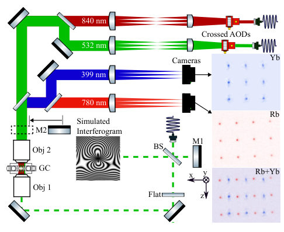
<figcaption class="paper-figure-caption"><b>Fig 1.</b> FIG. 1. Optical system overview. Laser light for the opti- cal tweezers (maroon and green) is delivered via optical fiber, sent through independent AODs, and via Objective-2 (Obj- 2), demagnified and sent to the vacuum system. Atomic flo- rescence from both Rb and Yb (red and blue) is collected through Objective-2, separated by a dichroic beamsplitter, and independently imaged. The main TGF interferometer beam (green-dashed) travels in the opposite direction, is re- flected by a insertable mirror (M2) before creating an inter- ferogram, as pictured.</figcaption>
</figure>
<figure class="paper-figure-card">
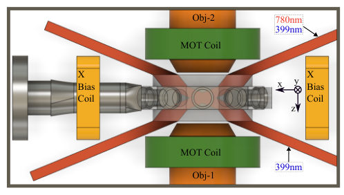
<figcaption class="paper-figure-caption"><b>Fig 2.</b> FIG. 2. Apparatus side view including four shallow-angle MOT beams. The glass cell (translucent) is mounted via stan- dard vacuum fittings (left). Shallow-angle MOT beams (red) narrowly avoid the objectives (orange) and MOT quadrupole coils (green) before entering through the top and bottom viewports. While 3D control of the magnetic field is pro- vided by three pairs of bias coils, only the x-bias coils (yel- low) are shown. Not shown are the out-of-plane MOT beams and through-objective beams at 532 nm, 556 nm and 840 nm beams.</figcaption>
</figure>
<figure class="paper-figure-card">
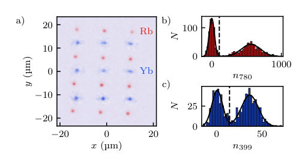
<figcaption class="paper-figure-caption"><b>Fig 3.</b> FIG. 3. Simultaneous trapping and single-site-resolved imag- ing of 87Rb and 174Yb in co-aligned 4 × 3 and 3 × 3 tweezer arrays. (a) Composite fluorescence image. We average im- ages of simultaneously loaded 87Rb and 174Yb arrays over 100 repetitions of the experiment, and combine them into the displayed two-channel color image. (b) and (c) Histograms demonstrating sub-Poissonian loading statistics for 87Rb and 174Yb respectively. These histograms are compiled for the whole tweezer array, and are broadened from spatial inhomo- geneities. In both cases, the horizontal axis plots the photon counts per trap. The solid lines shows a fit of the histogram to two displaced Gaussian distributions,...</figcaption>
</figure>
</div>

<p><strong>Summary.</strong> The researchers developed an advanced optical tweezer array capable of simultaneously trapping and manipulating two different types of atoms, $^{87}	ext{Rb}$ and $^{174}	ext{Yb}$. They overcame major technical challenges in multi-wavelength alignment using a specialized interferometer. This platform significantly enhances capabilities for building hybrid quantum registers by enabling controlled interactions between distinct atomic species.</p>
<p><strong>Why it may be interesting.</strong> This work directly addresses a major engineering hurdle in quantum simulation: integrating multiple distinct atomic species into one controllable platform. The use of advanced interferometry to solve the alignment problem across widely separated wavelengths is technically significant for building scalable quantum hardware.</p>
<details>
<summary>Detailed structure</summary>
<p><strong>Main problem.</strong> The primary goal is to establish a robust platform for quantum simulation and computation by trapping and controlling two different species of neutral atoms simultaneously.</p>
<p><strong>Main result.</strong> The authors successfully demonstrated simultaneous single-site resolved imaging, high-fidelity state detection, and controlled transfer between $^{87}	ext{Rb}$ (alkali) and $^{174}	ext{Yb}$ (alkaline-earth-like) atoms in co-aligned optical tweezer arrays.</p>
<p><strong>Method.</strong> The experiment utilizes a permanent hybrid Twyman-Green–Fizeau interferometer to achieve the necessary precision co-alignment of multiple high-NA objectives required for trapping and imaging two distinct atomic species at widely separated wavelengths.</p>
<p><strong>Model / system.</strong> The platform consists of dual-species optical tweezer arrays containing $^{87}	ext{Rb}$ (trapped via 840 nm light) and $^{174}	ext{Yb}$ (trapped via 532 nm light). The system is designed to support hybrid quantum register operations, including mid-circuit measurements and controlled inter-species interactions.</p>
<p><strong>Key observables.</strong> Single-site resolved fluorescence imaging, two-way atom transfer efficiency ($\sim 85\%$), detection fidelity ($>99.97\%$ for $ ext{Rb}$), and survival probability after imaging.</p>
<p><strong>Important parameters / regimes.</strong> Wavelengths used include $840 	ext{ nm}$ ($  ext{Rb}$) and $532 	ext{ nm}$ ($ ext{Yb}$). Alignment precision is demonstrated to be better than $1\ \mu	ext{m}$ displacement sensitivity. Temperatures achieved are in the microkelvin regime.</p>
<p><strong>Assumptions / limitations.</strong> The alignment relies on the interferometer's ability to maintain precise optical paths across a large spectral range, and the loading process must be sequential due to potential photoionization issues when mixing MOT light sources.</p>
<p><strong>Figures summary.</strong> Figures illustrate the complex optical system using the TGF interferometer for co-alignment of multiple objectives. Other figures show composite fluorescence images confirming the successful simultaneous trapping and imaging of single atoms from both species in an array format.</p>
<p><strong>Paper structure.</strong> The paper first introduces the need for dual-species platforms, details the technical challenge of multi-wavelength alignment using the interferometer, presents the experimental setup and loading/imaging procedures for both $  ext{Rb}$ and $  ext{Yb}$, and concludes with measurements demonstrating high control fidelity and transfer efficiency.</p>
</details>
<details>
<summary>Abstract</summary>
<p>We have developed a dual-species optical tweezer array apparatus combining $^{87}\text{Rb}$ and $^{174}\text{Yb}$ atoms with a permanent hybrid Twyman-Green--Fizeau interferometer, which provides precision co-alignment of two opposing 0.6-numerical aperture (NA) objectives and the high NA beams that pass through the system. This technique is extensible to other tweezer platforms operating at high numerical aperture across widely-separated wavelengths. Here we present simultaneous trapping and single-site resolved imaging of both species in co-aligned tweezer arrays with $^{87}\text{Rb}$ confined at $840\ \rm{nm}$ and $^{174}\text{Yb}$ at $532\ \rm{nm}$. The platform provides a foundation for hybrid quantum register operation, including mid-circuit measurements and asymmetric intra- and inter-species interactions, greatly expanding the capabilities of neutral atom arrays.</p>
</details>
<p><sub><a href="#top">↑ back to top</a></sub></p>

<p><a id="paper-2608.14327"></a></p>
<h3 id="quantum-snapshots-reveal-a-compact-conformal-boundary-mode"><a href="http://arxiv.org/abs/2608.14327v1">Quantum Snapshots Reveal a Compact Conformal Boundary Mode</a></h3>
<p><strong>Authors:</strong> M. A. Rajabpour<br>
<strong>Type:</strong> theory · <strong>Category:</strong> statistical mechanics · <strong>PDF:</strong> <a href="https://arxiv.org/pdf/2608.14327v1">https://arxiv.org/pdf/2608.14327v1</a><br>
<strong>Analysis basis:</strong> full PDF text, analyzed in chunks
<strong>Topic relevance:</strong> 🔥 <code>quantum measurements</code> <strong>4/5</strong> · <code>Full counting statistics</code> <strong>3/5</strong> · <code>non-equilibrium universality</code> <strong>3/5</strong> · <code>driven-dissipative phase transition</code> <strong>2/5</strong> · <code>Frenkel-Kontorova</code> <strong>1/5</strong> · <code>Keldysh / 2PI / non-Gaussian methods</code> <strong>1/5</strong> · <code>analog quantum simulation</code> <strong>1/5</strong> · <code>correlated / nonlocal dissipation</code> <strong>1/5</strong> · <code>methods for driven-dissipative</code> <strong>1/5</strong></p>
<div class="figure-strip-hint">↔ Scroll figures horizontally</div>
<div class="paper-figures-scroll">
<figure class="paper-figure-card">
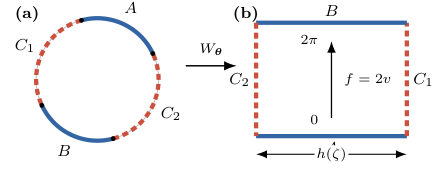
<figcaption class="paper-figure-caption"><b>Fig 1.</b> FIG. 1. Geometry and conformal coordinate. The measured arcs C1, C2 (dashed red) and unmeasured arcs A, B (solid blue) map to the vertical and horizontal sides of the rectangle Rh, respectively. The boundary coordinate f = 2 Im W = 2v equals 0 on A, 2π on B, and winds once with opposite orientations along the two measured sides.</figcaption>
</figure>
</div>

<p><strong>Summary.</strong> This work establishes that the information contained in partial quantum measurements of critical many-body systems is sufficient to determine universal continuum quantities. By analyzing a specific compact coordinate $\delta_L$, the authors prove its scaling limit follows a Gaussian distribution whose width is dictated by the system's geometry via conformal field theory moduli.</p>
<p><strong>Why it may be interesting.</strong> It provides a rigorous link between highly non-local, continuous field theory concepts (like boundary modes and Dirichlet energy) and local, measurable quantum data obtained from partial measurements on simple lattice models.</p>
<details>
<summary>Detailed structure</summary>
<p><strong>Main problem.</strong> To determine if a universal field-theory coordinate can be decoded directly from individual microscopic quantum snapshots (partial measurements) of many-body states at critical points.</p>
<p><strong>Main result.</strong> The scaling limit of the free-fermion statistics converges to a Gaussian distribution whose variance is determined by the relative Dirichlet phase, establishing an exact microscopic foundation for this boundary mode.</p>
<p><strong>Method.</strong> The authors use projective measurement on the XX chain ground state, mapping it to determinantal processes, and analyzing the Fourier moments of the resulting compact coordinate $\delta_L$.</p>
<p><strong>Model / system.</strong> The analysis focuses on the half-filled critical XX chain (a free-fermion system) with periodic boundary conditions. The physics is connected to conformal field theory via boundary conditions defined by a cross-ratio $\zeta$.</p>
<p><strong>Key observables.</strong> The compact variable $\delta_L$, its characteristic function $\langle e^{iq\delta_L} \rangle$, and the resulting Gaussian distribution $e^{-h(\zeta)q^2}$.</p>
<p><strong>Important parameters / regimes.</strong> The conformal cross-ratio $\zeta$ and the associated rectangle modulus $h(\zeta)$, which govern the limiting variance.</p>
<p><strong>Assumptions / limitations.</strong> The result is proven exactly for the free-fermion point; extension to interacting systems requires a non-trivial 'outcome-level decoder'.</p>
<p><strong>Figures summary.</strong> Figures illustrate the geometry of the measured/unmeasured arcs forming a conformal quadrilateral, and tables summarize the equivalence between continuum boundary phases and microscopic lattice measurements.</p>
<p><strong>Paper structure.</strong> The paper builds from defining the partial measurement process on the XX chain to constructing the compact coordinate $\delta_L$. It then uses determinantal calculations to find the scaling limit of its moments, finally equating this result to known continuum results in BCFT.</p>
</details>
<details>
<summary>Abstract</summary>
<p>A projective measurement of a many-body state produces a microscopic snapshot, usually viewed as random classical data. We show that partial occupation snapshots of the critical XX chain contain a universal angle with a precise conformal meaning. Dividing the ring into two measured and two unmeasured arcs, we assign geometry-dependent conformal side weights to the observed occupations and obtain a compact variable $δ_L$. At every finite size, $δ_L$ is fixed by the measured sites alone; the particular complete-configuration lift $X_L$ used in the proof additionally depends on unobserved particles. This angle is an exact microscopic compact coordinate whose scaling-limit law is that of the relative Dirichlet phase of the associated conformal quadrilateral---the boundary coordinate conjugate to charge in continuum post-measurement descriptions. Exact free-fermion determinants yield all of its Fourier moments. We prove that the lift becomes Gaussian with variance $2h(ζ)$, where $h(ζ)$ is the rectangle modulus, and hence $\langle e^{\ii qδ_L}\rangle\to e^{-h(ζ)q^2}$. Thus raw quantum snapshots realize the heat kernel on a circle and provide an outcome-level microscopic foundation for the compact zero-mode sector of Born averages over fluctuating conformal boundary conditions.</p>
</details>
<p><sub><a href="#top">↑ back to top</a></sub></p>

<p><a id="paper-2608.14276"></a></p>
<h3 id="generalizing-the-multidimensional-thermodynamic-uncertainty-relation-to-combinations-of-arbitrary-counting-variables"><a href="http://arxiv.org/abs/2608.14276v1">Generalizing the multidimensional thermodynamic uncertainty relation to combinations of arbitrary counting variables</a></h3>
<p><strong>Authors:</strong> Niklas Buschmann, Udo Seifert, Alexander M. Maier<br>
<strong>Type:</strong> theory · <strong>Category:</strong> statistical mechanics · <strong>PDF:</strong> <a href="https://arxiv.org/pdf/2608.14276v1">https://arxiv.org/pdf/2608.14276v1</a><br>
<strong>Analysis basis:</strong> full PDF text, analyzed in chunks
<strong>Topic relevance:</strong> 🔥 <code>Full counting statistics</code> <strong>4/5</strong> · <code>methods for driven-dissipative</code> <strong>3/5</strong> · <code>non-equilibrium universality</code> <strong>3/5</strong> · <code>Keldysh / 2PI / non-Gaussian methods</code> <strong>2/5</strong> · <code>driven-dissipative phase transition</code> <strong>2/5</strong> · <code>correlated / nonlocal dissipation</code> <strong>1/5</strong> · <code>quantum measurements</code> <strong>1/5</strong></p>
<div class="figure-strip-hint">↔ Scroll figures horizontally</div>
<div class="paper-figures-scroll">
<figure class="paper-figure-card">
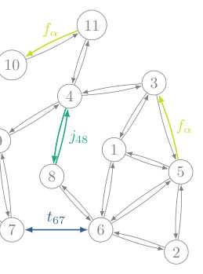
<figcaption class="paper-figure-caption"><b>Fig 1.</b> Figure 1. Partially observable Markov network with 13 discrete states. Gray transitions and states are hidden, whereas an observer may register the flow f13 12 (purple), the traffic t67 (blue), the flows of the net current j48 (green), the coarse-grained flow fα = f53 + f11 10 (yellow), or a combination of these.</figcaption>
</figure>
<figure class="paper-figure-card">
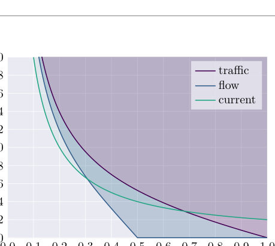
<figcaption class="paper-figure-caption"><b>Fig 2.</b> Figure 2. Comparison of the lower bounds (39) to (41) for one observed color per rate r ∈{t, f, j}. For the traffic t (purple), the flow f (blue) and the current j (green), the respective shaded region indicates permissible values of the steady-state entropy production rate σ in units of the corresponding mean rate ⟨r⟩as a function of the Fano factor F as defined in (38).</figcaption>
</figure>
<figure class="paper-figure-card">
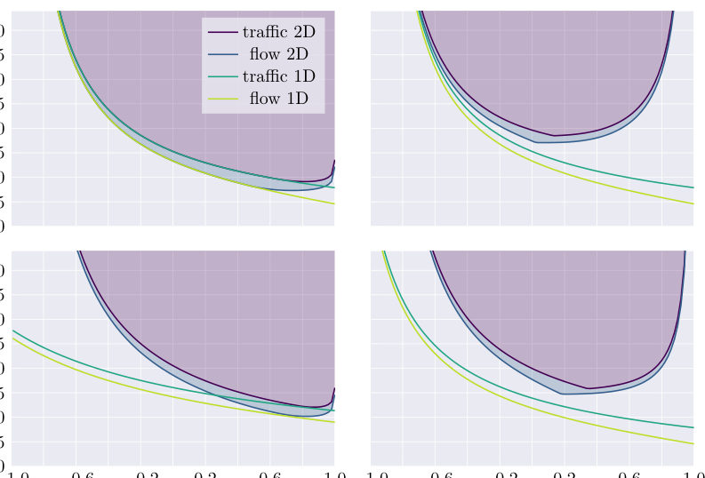
<figcaption class="paper-figure-caption"><b>Fig 3.</b> Figure 3. Comparison of bounds on the steady-state entropy production rate σ based on one (1D) or two (2D) colors of traffic or flow. Bound (26) depends on five variables in the 2D case, of which we fix the mean rate ⟨rα⟩and the standard deviation σα of the fluctuating traffic or flow of color α ∈{1, 2} and vary the correlation ρ ≡σ1σ2/Σ12 between r1 and r2 in each of the graphs. The fixed values (⟨r1⟩, ⟨r2⟩, σ1, σ2) are (0.5, 0.5, 0.3, 0.3) in the upper left panel, (0.2, 0.8, 0.3, 0.3) in the upper right panel, (0.2, 0.8, 0.1, 0.4) in the lower left panel and (0.5, 0.5, 0.2, 0.4) in the lower right panel, respectively. In all panels, the bounds labeled 1D are based on the combined rate r1...</figcaption>
</figure>
<figure class="paper-figure-card">
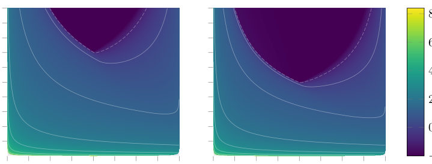
<figcaption class="paper-figure-caption"><b>Fig 4.</b> Figure 4. Bound on the steady-state entropy production rate σ per unit time for two traffic observables (left) and for two flow observables (right). The bound (26) depends on five variables in the case with rates of two colors, of which we fix ⟨r1⟩= ⟨r2⟩= 0.5 and set the two variances per unit time of the fluctuating rates equal, σ2 1 = σ2 2. In both cases, we vary σ1 and the correlation ρ ≡σ1σ2/Σ12 = σ2 1/Σ12 between r1 and r2. In the darkest regions where the entropy production vanishes, σ = 0, the values of σ1, σ2 and ρ can be realized in equilibrium.</figcaption>
</figure>
</div>

<p><strong>Summary.</strong> The authors generalize the Thermodynamic Uncertainty Relation (TUR) to create a universal lower bound on entropy production rate ($\sigma$). They achieve this by applying the Cramér-Rao bound to arbitrary combinations of fluctuating counting variables—including currents, traffics, and flows—in time-dependent Markov processes. This provides a powerful, model-independent diagnostic tool for characterizing non-equilibrium physics using only measured statistical moments.</p>
<p><strong>Why it may be interesting.</strong> This work provides a powerful, general mathematical tool connecting fundamental thermodynamic quantities ($\sigma$) directly to measurable statistical fluctuations (covariances), which is crucial for characterizing non-equilibrium steady states in complex systems like molecular motors or biological networks.</p>
<details>
<summary>Detailed structure</summary>
<p><strong>Main problem.</strong> The paper generalizes the multidimensional thermodynamic uncertainty relation (MTUR) to provide model-independent lower bounds on the entropy production rate ($\sigma$) for time-dependently driven processes.</p>
<p><strong>Main result.</strong> A generalized MTUR is established using a matrix inequality ($M' \succeq 0$), which provides a fundamental, mathematically rigorous lower bound on $\sigma$ based solely on measured mean rates and covariances of arbitrary counting variables (currents, traffics, or flows).</p>
<p><strong>Method.</strong> The derivation relies heavily on the multivariate Cramér-Rao bound applied to Fisher information derived from perturbing the system's transition rates within a continuous-time Markov jump process framework.</p>
<p><strong>Model / system.</strong> The analysis is based on stochastic processes governed by master equations, applicable to any partially accessible Markov network. The dynamics are characterized by transition rates ($k_{ij}$) and observable quantities like flows ($f_{ij}$), traffics ($t_{ij}$), or net currents ($j_{ij}$).</p>
<p><strong>Key observables.</strong> Entropy Production Rate ($\sigma$), Mean Rates ($\langle r_\alpha 
angle$, $\langle t_\alpha 
angle$, $\langle f_\alpha 
angle$), Covariances ($\Sigma_{\alphaeta}$), and the Fisher Information matrix $I(	heta)$.</p>
<p><strong>Important parameters / regimes.</strong> Time-dependent driving protocols, arbitrary initial states, measurement duration ($T$), and the perturbation parameter $    heta$.</p>
<p><strong>Assumptions / limitations.</strong> The derivation assumes that the mean values and covariances of the generalized rates are known exactly; it also uses a perturbation approach based on an auxiliary process.</p>
<p><strong>Figures summary.</strong> Figures compare derived lower bounds for $\sigma/\langle r 
angle$ vs. Fano factor $F$ for single, two-observable combinations (currents, traffics, flows), and show the dependence of these bounds on correlation coefficients ($
ho$).</p>
<p><strong>Paper structure.</strong> The paper builds from the standard TUR to the MTUR, generalizing it first to time-dependent processes. It systematically derives bounds for one observable type (current/traffic/flow) and then extends this to combinations of two or more observables using matrix inequalities derived from Cramér-Rao theory.</p>
</details>
<details>
<summary>Abstract</summary>
<p>Uncertainty relations provide lower bounds for otherwise hidden quantities of a partially accessible Markov network like the mean entropy production rate and the total dynamical activity. The thermodynamic uncertainty relation (TUR) is arguably the most prominent one and involves the precision of a fluctuating net current. One of its major generalizations is the multidimensional TUR (MTUR), which yields a tighter bound by using covariances of a set of observed net currents. We generalize this latter bound to time-dependently driven processes with arbitrary initial state and arbitrary measurement duration. Furthermore, this bound can be used with a set of fluctuating counting observables each of which can be time-antisymmetric, time-symmetric or time-asymmetric, i.e., a net current, a traffic or a flow. We can even allow for coarse-grained observations in which each counting observable could consist of multiple indiscernable observed transitions of the underlying system. Thus, we generalize the MTUR, extensions of the TUR for time-dependent processes based on one current, and an estimator based on one flux or on one traffic in a unifying way. We illustrate this general uncertainty relation with simple examples.</p>
</details>
<p><sub><a href="#top">↑ back to top</a></sub></p>

<p><a id="paper-2608.14362"></a></p>
<h3 id="tuning-crystal-fields-by-he-irradiation-and-orbital-widom-line-in-srvomath130math-films"><a href="http://arxiv.org/abs/2608.14362v1">Tuning crystal-fields by He-irradiation and orbital Widom line in SrVO$_3$ films</a></h3>
<p><strong>Authors:</strong> Matthias Pickem, Karsten Held, Jan M. Tomczak<br>
<strong>Type:</strong> theory · <strong>Category:</strong> strongly correlated electrons · <strong>PDF:</strong> <a href="https://arxiv.org/pdf/2608.14362v1">https://arxiv.org/pdf/2608.14362v1</a><br>
<strong>Analysis basis:</strong> full PDF text, analyzed in chunks
<strong>Topic relevance:</strong> 🔥 <code>analog quantum simulation</code> <strong>4/5</strong> · <code>Keldysh / 2PI / non-Gaussian methods</code> <strong>3/5</strong> · <code>driven-dissipative phase transition</code> <strong>2/5</strong> · <code>methods for driven-dissipative</code> <strong>2/5</strong> · <code>non-equilibrium universality</code> <strong>2/5</strong> · <code>correlated / nonlocal dissipation</code> <strong>1/5</strong> · <code>quantum measurements</code> <strong>1/5</strong> · <code>scars &amp; prethermalization</code> <strong>1/5</strong></p>
<div class="figure-strip-hint">↔ Scroll figures horizontally</div>
<div class="paper-figures-scroll">
<figure class="paper-figure-card">
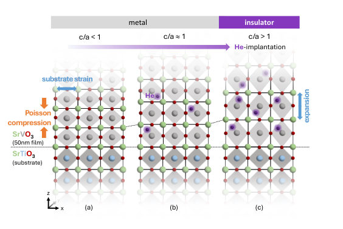
<figcaption class="paper-figure-caption"><b>Fig 1.</b> FIG. 1. Schematics of Wang et al.’s experiment [16]: (a) When grown on SrTiO3, the in-plane lattice constants a = b of SrVO3 are locked by the substrate constraint, leading to a tetragonal compression c/a &lt; 1. (b) The compression is consecutively overcome by He-ion implantation that acts as chemical pressure; (c) above a critical c/a &gt; 1 ratio, the system undergoes a metal-insulator transition.</figcaption>
</figure>
<figure class="paper-figure-card">
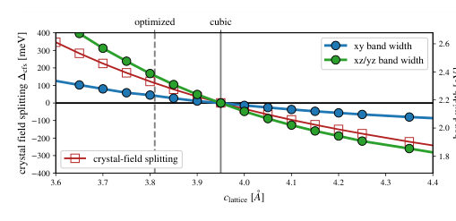
<figcaption class="paper-figure-caption"><b>Fig 2.</b> FIG. 2. Crystal-field splitting ∆cfs = Exz/yz −Exy (red line, left y-axis) and band widths of the dxy and dxz/dyz orbitals (blue and green lines, right y-axis) of tetragonally deformed bulk SrVO3 using DFT. The in-plane lattice constant is con- strained to a = b = 3.95˚A of the substrate while the per- pendicular c axis is varied. For c &lt; 3.95˚A the dxy-orbital is energetically favored (∆cfs &gt; 0), for c &gt; 3.95˚A the dxz/dyz- orbitals are favored (∆cfs &lt; 0).</figcaption>
</figure>
<figure class="paper-figure-card">
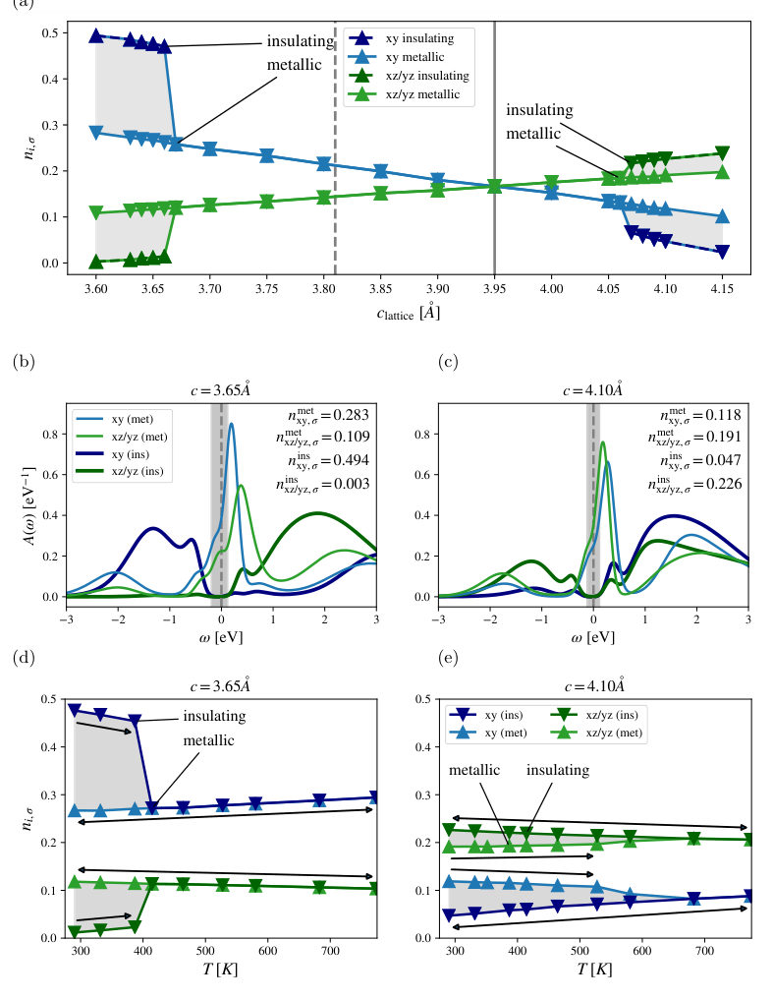
<figcaption class="paper-figure-caption"><b>Fig 3.</b> FIG. 3. Dynamical mean-field theory (DMFT) results. (a) Orbital and spin resolved occupations at room temperature (T = 290 K, β = 40 eV−1). The sudden jump in orbital polarization for small and large c-axis parameters signals polarized insulating solutions. (b,c) Orbital resolved local spectral functions in the coexistence region of uniaxially compressed (c = 3.65˚A; panel b) and elongated (c = 4.10˚A; panel c) bulk SrVO3 with an in-plane lock to a = b = 3.95˚A, at room temperature, T = 290K. The insulating solutions, with spectral gaps marked in gray, are characterized by a nearly half-filled dxy orbital [nxy,σ ≈0.5; panel (b)] and a quarter-filled dxz/dyz doublet [nxz/yz,σ ≈0.25; panel...</figcaption>
</figure>
<figure class="paper-figure-card">
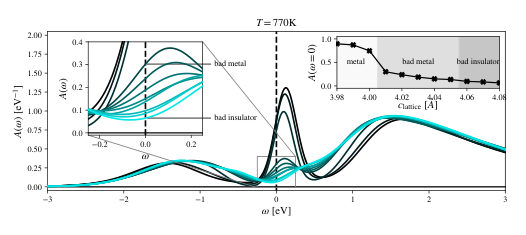
<figcaption class="paper-figure-caption"><b>Fig 4.</b> FIG. 4. Detailed evolution of the spectral function across the metal-insulator crossover as a function of the clattice parame- ter (at the 11 values given by the inset) at T = 770K. Beyond a crystal-field splitting threshold, the metal morphs into a badly metal phase (quasi-particle peak is suppressed but re- mains finite and convex in ω). Beyond c ≳4.06˚A, the spectral function is indicative of a bad insulator (spectral weight at the Fermi level is finite but concave in ω).</figcaption>
</figure>
<figure class="paper-figure-card">
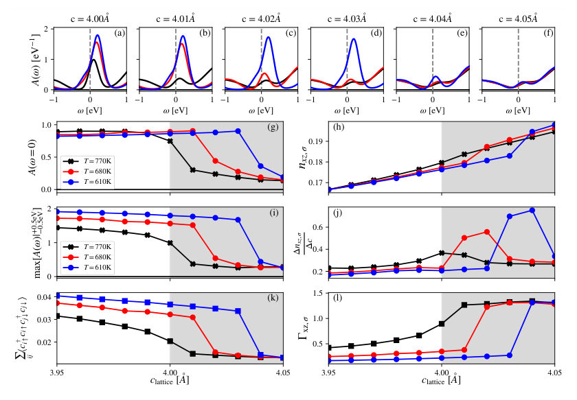
<figcaption class="paper-figure-caption"><b>Fig 5.</b> FIG. 5. (a-f) Evolution of the spectral function along the metal to bad metal/insulator crossover from c = 4.00 →4.05˚A. We show the crossover for the temperatures T = 770K, T = 680K and T = 610K. (g) Spectral weight at the Fermi level A(ω = 0) and (i) height of the quasi particle peak max[A(ω)|+0.5eV −0.5eV]. Cooling the system boosts the quasi-particle peak and a larger crystal-field splitting (larger c values) is necessary to turn the system insulating. The crossover is characterized by a sudden change in orbital occupation nxy,σ (panel h), and the resulting maximum of the (symmetric) numerical derivative thereof (panel j). Further, the metal-insulator crossover is accompanied by a drop...</figcaption>
</figure>
</div>

<p><strong>Summary.</strong> This work investigates the mechanism behind a metal-insulator transition in SrVO3 films induced by Helium irradiation. Using advanced DFT+DMFT calculations, the authors argue that the transition is governed not by electron-electron interactions (Mott physics) but by crystal-field splitting driven by lattice strain. This establishes ion implantation as a powerful tool to tune correlated electronic states.</p>
<p><strong>Why it may be interesting.</strong> While focused on correlated oxides, the methodology—using lattice parameters (strain) to tune orbital degrees of freedom and map out phase diagrams involving quantum critical points—is highly relevant for understanding tunable quantum materials in AMO or open quantum systems contexts.</p>
<details>
<summary>Detailed structure</summary>
<p><strong>Main problem.</strong> To determine whether the metal-insulator transition (MIT) in He-irradiated SrVO3 films is driven by Mott localization or crystal-field splitting.</p>
<p><strong>Main result.</strong> The MIT is shown to be driven by the crystal-field splitting generated by irradiation-induced tetragonal expansion, leading to an orbital Widom line rooted in anomalous orbital compressibility.</p>
<p><strong>Method.</strong> Density-Functional Theory combined with Dynamical Mean-Field Theory (DFT+DMFT) calculations are used to model electronic structure and phase transitions.</p>
<p><strong>Model / system.</strong> The study focuses on epitaxial SrVO3/SrTiO3 thin films, where He-ion irradiation acts as a chemical pressure tuning the lattice parameters and crystal fields.</p>
<p><strong>Key observables.</strong> Crystal-field splitting (Delta cfs), orbital band widths, spectral functions A(omega), and orbital occupations.</p>
<p><strong>Important parameters / regimes.</strong> Lattice strain/c-axis parameter (compression vs. expansion), temperature (T), and interaction strength (U).</p>
<p><strong>Assumptions / limitations.</strong> The analysis assumes that He-implantation can be modeled as chemical pressure, allowing the study of expanded structures; tetrahedral symmetry is assumed to be maintained.</p>
<p><strong>Figures summary.</strong> Figures illustrate lattice changes due to irradiation, show spectral function evolution across varying c-axis parameters (indicating MIT), and map out phase diagrams related to orbital order.</p>
<p><strong>Paper structure.</strong> The paper first establishes the experimental context of strain tuning in SrVO3. It then uses DFT+DMFT calculations to analyze how crystal-field splitting dictates electronic behavior, predicting an orbital Widom line as the key diagnostic feature distinguishing it from simple charge localization models.</p>
</details>
<details>
<summary>Abstract</summary>
<p>Helium-ion irradiation of epitaxial SrVO$_3$/SrTiO$_3$ films causes a metal-insulator transition, so far attributed to a Mott localization driven by a reduced kinetic energy. Using density-functional theory plus dynamical mean-field theory, we show that the driving mechanism is instead the crystal-field splitting generated by the irradiation-induced tetragonal expansion, not the interaction-to-bandwidth ratio. The resulting $c$-axis vs. temperature phase diagram mirrors that of the one-band Hubbard model, but its critical end-point spawns an orbital Widom line, rooted in an anomalous compressibility of orbital, rather than charge occupation. At an effectively quarter filling, superexchange-like processes favor orbital over magnetic long-range order. Our results semi-quantitatively reproduce the fluence-dependent spectral gaps and transition thresholds reported experimentally, establishing ion implantation as a route to chemically expand correlated materials.</p>
</details>
<p><sub><a href="#top">↑ back to top</a></sub></p>

<p><a id="paper-2608.13942"></a></p>
<h3 id="maximizing-nonclassicality-of-massive-objects-via-quantum-zeno-effect"><a href="http://arxiv.org/abs/2608.13942v1">Maximizing Nonclassicality of Massive Objects via Quantum Zeno Effect</a></h3>
<p><strong>Authors:</strong> Debarshi Das, Pritam Roy, Marko Toroš, Hendrik Ulbricht, Dipankar Home, Sougato Bose<br>
<strong>Type:</strong> both · <strong>Category:</strong> other · <strong>PDF:</strong> <a href="https://arxiv.org/pdf/2608.13942v1">https://arxiv.org/pdf/2608.13942v1</a><br>
<strong>Analysis basis:</strong> full PDF text, analyzed in chunks
<strong>Topic relevance:</strong> 🔥 <code>quantum measurements</code> <strong>4/5</strong> · <code>quantum optics experiment</code> <strong>3/5</strong> · <code>driven-dissipative phase transition</code> <strong>2/5</strong> · <code>Keldysh / 2PI / non-Gaussian methods</code> <strong>1/5</strong> · <code>correlated / nonlocal dissipation</code> <strong>1/5</strong> · <code>methods for driven-dissipative</code> <strong>1/5</strong></p>
<div class="figure-strip-hint">↔ Scroll figures horizontally</div>
<div class="paper-figures-scroll">
<figure class="paper-figure-card">
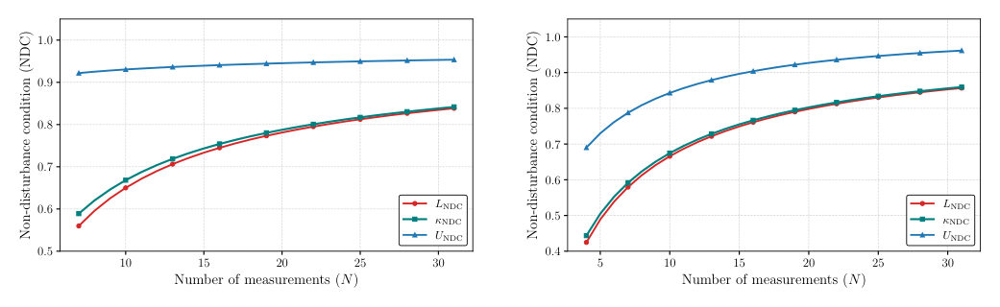
<figcaption class="paper-figure-caption"><b>Fig 1.</b> Figure 1: The blue curve shows the upper limit UNDC, the red curve shows the lower limit LNDC, and the green curve shows the numerically computed value of κNDC. Panels (a) and (b) correspond to: (a) Ωmt f = π</figcaption>
</figure>
<figure class="paper-figure-card">

<figcaption class="paper-figure-caption"><b>Fig 2.</b> Figure 2: Levitated and suitably trapped mechanical mass m, trapped in a harmonic potential with mechanical frequency Ωm, is placed inside a cavity of frequency ωc, driven by input laser of state |α⟩o and frequency ωL. The output from cavity is subjected to an optical displacement Do(−α), followed by a on/off photon detector (D). Here, g denotes the optomechanical coupling, κo is the optical cavity decay rate, and Γm denotes the mechanical damping rate. The cavity is red-detuned by setting ωL −ωc = −Ωm, the resulting linearized optomechanical interaction realizes a beam-splitter Hamiltonian.</figcaption>
</figure>
<figure class="paper-figure-card">

<figcaption class="paper-figure-caption"><b>Fig 3.</b> Fig. 2 illustrates how our proposed setup works. Let the mechnaical oscillator be in an arbitrary coherent state |β⟩m. The optical ancilla is initialized in the coherent state |α⟩o and interacts with the mechanical mode for tswap = π/(2g). In the strong-coupling regime g ≫κo, Γm (Γm be- ing the mechanical damping rate), this realizes a coherent state swap. In the ideal dissipation-free limit one obtains an ideal swap: |α⟩o|β⟩m →|β⟩o|α⟩m. Including weak dissip- ation, the swap becomes |α⟩o|β⟩m →|Aβ⟩o|Aα⟩m, where</figcaption>
</figure>
<figure class="paper-figure-card">

<figcaption class="paper-figure-caption"><b>Fig 4.</b> Figure 3: Non-Disturbance Condition (NDC) lower bound LNDC enhancement under sequential operations as a function of the number of operations N. (a) For experimentally realized optomechanical parameter regimes with m ∼10−18 kg and m ∼10−10 kg: de los Ríos et al. (dLR) [41] and Gröblacher et al. (Gr) [42]. (b) Performance in optimistic parameter regimes (Opt-I and Opt-II) with a moderate improvement over the experimentally demonstrated optomechanical coupling (g)-to-optical cavity decay rate (κo) ratio, while keeping all other parameters in the experimentally realizable regime [41, 42]. Solid and dashed curves correspond to coherent amplitudes |α| = 0.5 and |α| = 0.7, respectively. The ideal...</figcaption>
</figure>
<figure class="paper-figure-card">

<figcaption class="paper-figure-caption"><b>Fig 5.</b> Figure 4: Log-scale comparison between the numerical and analytical survival probabilities for repeated coherent-state measurements under harmonic-oscillator evolution. The plotted quantity is the absolute deviation ∆as a function of the number of measurements N. Different marker styles and line types correspond to different coherent-state amplitudes α and truncation thresholds ϵ.</figcaption>
</figure>
</div>

<p><strong>Summary.</strong> The paper proposes using the Quantum Zeno Effect (QZE) to amplify subtle, nonclassical signatures of massive objects that are otherwise lost to decoherence. By implementing a loophole-free measurement protocol within an optomechanical cavity setup, the authors show that this enhanced quantum disturbance remains measurable even when considering realistic damping effects.</p>
<p><strong>Why it may be interesting.</strong> This work directly bridges fundamental quantum foundations (QZE) with cutting-edge experimental platforms (optomechanics), providing concrete, testable protocols for observing nonclassical effects in macroscopic systems while accounting for realistic environmental losses.</p>
<details>
<summary>Detailed structure</summary>
<p><strong>Main problem.</strong> The primary challenge addressed is enhancing observable nonclassical signatures of massive objects against environmental decoherence by utilizing the Quantum Zeno Effect (QZE). The goal is to devise a loophole-free scheme to quantify this measurement-induced quantum disturbance.</p>
<p><strong>Main result.</strong> The analysis demonstrates that the measurable quantity, $\kappa_{NDC}$, which quantifies QZE-enhanced nonclassicality, remains appreciably observable even in realistic regimes incorporating optomechanical damping for sufficiently large masses.</p>
<p><strong>Method.</strong> The authors formulate a testable scheme using repetitive measurements (QZE) on a massive oscillator coupled to an optical field. They derive analytical bounds and analyze the limit where repeated measurements freeze the system's evolution.</p>
<p><strong>Model / system.</strong> The physical platform is a massive quantum harmonic oscillator, requiring ground-state cooling. The measurement interaction is realized via a beam-splitter-type coupling between the mechanical mode and an optical field in an optomechanical setup.</p>
<p><strong>Key observables.</strong> No-Disturbance Condition Violation ($\kappa_{	ext{NDC}}$), Survival Probability ($P_{	ext{with}}^0(t_f)$), and comparison against $P_{	ext{without}}^0(t_f)$.</p>
<p><strong>Important parameters / regimes.</strong> Number of measurements ($N$), total time ($t_f$), optomechanical damping rates ($\kappa_o, \Gamma_m$), and the mass parameter.</p>
<p><strong>Assumptions / limitations.</strong> The scheme requires trapping and cooling the massive object to its ground state. Later analyses assume strong-coupling regimes for simplifying the dynamics in the presence of dissipation.</p>
<p><strong>Figures summary.</strong> Figures illustrate numerical computations of $\kappa_{NDC}$ against derived analytical bounds, schematic diagrams of the optomechanical setup, and plots showing how the lower bound $L_{NDC}$ enhances under sequential operations across various damping regimes.</p>
<p><strong>Paper structure.</strong> The paper progresses from establishing the theoretical framework using QZE to define a measurable witness ($\kappa_{NDC}$). It then details the physical realization using an optomechanical cavity system, analyzing both the ideal and damped limits of the measurement protocol.</p>
</details>
<details>
<summary>Abstract</summary>
<p>For testing quantum mechanics in the macroscopic domain, a major challenge is to devise effective means for enhancing the observable nonclassical signatures despite the ubiquitous presence of environmental decoherence. Toward this goal, we invoke the Quantum Zeno Effect (QZE) for achieving a tunable amplification of an inherently nonclassical quantum disturbance induced by any measurement. Such an enhancement of otherwise small and decoherence-suppressed nonclassicality can arise from the cumulative quantum disturbances generated by repetitive measurements, with the tunability of amplification controlled by the number of measurements. To evidence this, we formulate a testable loophole-free scheme using a massive oscillator, where the system preparation requires trapping and ground-state cooling of a massive object. The required measurements can be realized through a beam-splitter-type interaction between the mechanical oscillator and an optical field, followed by photon detection. Our analysis shows that such amplification, suitably quantified in terms of a testable witness, remains appreciably observable even in the realistic regimes of optomechanical damping, and for sufficiently large masses, thus enabling the demonstration of QZE in the macroscopic domain.</p>
</details>
<p><sub><a href="#top">↑ back to top</a></sub></p>

<p><a id="paper-2608.14544"></a></p>
<h3 id="gpu-implementation-of-mixed-quantum-classical-liouville-molecular-dynamics-without-momentum-jump"><a href="http://arxiv.org/abs/2608.14544v1">GPU implementation of mixed quantum-classical Liouville molecular dynamics without momentum jump</a></h3>
<p><strong>Authors:</strong> Koji Ando<br>
<strong>Type:</strong> theory · <strong>Category:</strong> numerical methods · <strong>PDF:</strong> <a href="https://arxiv.org/pdf/2608.14544v1">https://arxiv.org/pdf/2608.14544v1</a><br>
<strong>Analysis basis:</strong> full PDF text, analyzed in chunks
<strong>Topic relevance:</strong> 🔥 <code>methods for driven-dissipative</code> <strong>4/5</strong> · <code>quantum measurements</code> <strong>3/5</strong> · <code>driven-dissipative phase transition</code> <strong>2/5</strong> · <code>Keldysh / 2PI / non-Gaussian methods</code> <strong>1/5</strong> · <code>correlated / nonlocal dissipation</code> <strong>1/5</strong></p>
<div class="figure-strip-hint">↔ Scroll figures horizontally</div>
<div class="paper-figures-scroll">
<figure class="paper-figure-card">

<figcaption class="paper-figure-caption"><b>Fig 1.</b> FIG. 1: Adiabatic excited state population P ad (t) for three- mode spin-boson model, comparing results from GPU with- out trajectory spawning, CPU with trajectory spawning, and quantum reference calculation.</figcaption>
</figure>
<figure class="paper-figure-card">

<figcaption class="paper-figure-caption"><b>Fig 2.</b> Figure 1 displays the adiabatic excited state popula- tion P ad (t) for the three-mode spin-boson model. The CPU simulation started with 50,000 walkers and the spawning generated 2.87 × 107 walkers in total. Accord- ingly, we allocated 2.8 × 107 walkers in the GPU simu- lation without spawning. The figure indicates that the accuracy is comparable between the CPU and GPU sim- ulations. The computation time measured by the @time macro (excluding the compilation time) were 1860 sec- onds on CPU and 80 seconds on GPU. Figure 2 displays the corresponding results for pyrazine S2 →S1 internal conversion. The CPU simulation started with 50,000 walkers and generated 1.40 × 107</figcaption>
</figure>
<figure class="paper-figure-card">

<figcaption class="paper-figure-caption"><b>Fig 3.</b> FIG. 2: Adiabatic excited state population P ad (t) for three- mode model of pyrazine S2 →S1 internal conversion, com- paring results from GPU without trajectory spawning, CPU with trajectory spawning, and quantum reference calculation.</figcaption>
</figure>
<figure class="paper-figure-card">

<figcaption class="paper-figure-caption"><b>Fig 4.</b> FIG. 3: Adiabatic excited state population P ad (t) for three- mode spin-boson model from GPU simulation without trajec- tory spawning, comparing results with the number of walkers N = 106, 107, and 108.</figcaption>
</figure>
<figure class="paper-figure-card">

<figcaption class="paper-figure-caption"><b>Fig 5.</b> FIG. 4: Adiabatic excited state population P ad (t) for three- mode model of pyrazine S2 →S1 internal conversion, from GPU simulation without trajectory spawning, comparing re- sults with the number of walkers N = 106, 107, and 108.</figcaption>
</figure>
</div>

<p><strong>Summary.</strong> The authors developed and implemented a mixed quantum-classical Liouville molecular dynamics simulation on a GPU to study nonadiabatic processes. By adopting a momentum-jump-free theory and optimizing the code to eliminate CPU-bound trajectory spawning, they achieved significant speedups. This makes complex simulations of chemical reactions computationally feasible for larger systems.</p>
<p><strong>Why it may be interesting.</strong> This work provides a highly efficient, parallelized numerical framework for simulating open quantum systems undergoing nonadiabatic dynamics, which is crucial for modeling energy transfer in molecular physics and quantum chemistry.</p>
<details>
<summary>Detailed structure</summary>
<p><strong>Main problem.</strong> Simulating nonadiabatic processes involving non-radiative transitions, such as redox or photochemical reactions.</p>
<p><strong>Main result.</strong> The GPU implementation achieved an order of magnitude speedup compared to CPU computations with trajectory spawning, while maintaining linear scaling with the number of sampling trajectories.</p>
<p><strong>Method.</strong> A mixed quantum-classical Liouville molecular dynamics simulation was implemented on a GPU using Julia and CUDA.jl, employing a momentum-jump-free theory derived from first principles.</p>
<p><strong>Model / system.</strong> The simulations tested include the three-dimensional spin-boson model and a two-state three-mode model for internal conversion in pyrazine.</p>
<p><strong>Key observables.</strong> Adiabatic excited state population $P_{ad}(t)$.</p>
<p><strong>Important parameters / regimes.</strong> Number of sampling trajectories (walkers), ranging up to $10^8$.</p>
<p><strong>Assumptions / limitations.</strong> The method omits trajectory spawning to avoid GPU overheads like thread divergence, which requires pre-allocating state variables for a fixed number of walkers.</p>
<p><strong>Figures summary.</strong> Figures show the adiabatic excited state population $P_{ad}(t)$ comparing results from varying walker numbers ($10^6$ to $10^8$) for two different models. A final figure plots computation time scaling linearly with the number of walkers on the GPU.</p>
<p><strong>Paper structure.</strong> The paper details the implementation of the momentum-jump-free Liouville dynamics on a GPU, presents results comparing population dynamics across varying walker numbers for specific chemical models, and concludes by analyzing the computational scalability.</p>
</details>
<details>
<summary>Abstract</summary>
<p>We implemented on GPU a mixed quantum-classical Liouville molecular dynamics simulation based on a momentum-jump-free theory. The trajectory spawning that was previously implemented on CPU for sampling enhancement was eliminated to avoid the overhead of thread divergence and dynamic memory allocation on the GPU. This achieved a speedup of an order of magnitude compared to the CPU computation with spawning, as well as a linear scaling with respect to the number of sampling trajectories.</p>
</details>
<p><sub><a href="#top">↑ back to top</a></sub></p>

<p><a id="paper-2608.14263"></a></p>
<h3 id="symqups-symbolic-quantum-phase-space-algebra-in-python"><a href="http://arxiv.org/abs/2608.14263v1">SymQuPS: Symbolic Quantum Phase Space Algebra in Python</a></h3>
<p><strong>Authors:</strong> Hendry M. Lim, Donny Dwiputra, Ahmad R. T. Nugraha<br>
<strong>Type:</strong> theory · <strong>Category:</strong> other · <strong>PDF:</strong> <a href="https://arxiv.org/pdf/2608.14263v1">https://arxiv.org/pdf/2608.14263v1</a><br>
<strong>Analysis basis:</strong> full PDF text, analyzed in chunks
<strong>Topic relevance:</strong> 🔥 <code>methods for driven-dissipative</code> <strong>4/5</strong> · <code>Keldysh / 2PI / non-Gaussian methods</code> <strong>3/5</strong> · <code>driven-dissipative phase transition</code> <strong>2/5</strong> · <code>correlated / nonlocal dissipation</code> <strong>1/5</strong> · <code>quantum measurements</code> <strong>1/5</strong></p>
<div class="figure-strip-hint">↔ Scroll figures horizontally</div>
<div class="paper-figures-scroll">
<figure class="paper-figure-card">

<figcaption class="paper-figure-caption"><b>Fig 1.</b> Figure 1: Performance benchmark for SymQuPS. We record the aver- age time it takes to run the functions indicated in the figure legend 100 times. Here, f is a random monomial in  ˆa, ˆa† for HattedStar , and (α, α∗) for Star and iCGTransform , with unit coefficient. In “Benchmark 1”, the degree of the monomial is varied and only one subsystem is considered. In “Benchmark 2”, the degree of monomial is fixed at 6, while the number of subsystems is varied. The random monomials are generated using get_random_poly , which does not support randomizer seeds, so repeated benchmarks may slightly dif- fer from each other.</figcaption>
</figure>
</div>

<p><strong>Summary.</strong> The paper presents SymQuPS, a Python library designed to perform symbolic algebra in the quantum phase space using the Cahill-Glauber correspondence. It allows researchers to translate complex quantum dynamics, such as those described by Lindblad master equations, into solvable differential equations within the $(\alpha, \alpha^*)$ phase space. This tool significantly aids theoretical work in quantum optics and open systems by automating difficult symbolic calculations.</p>
<p><strong>Why it may be interesting.</strong> This work is highly relevant as it provides a powerful, symbolic computational engine for analyzing open quantum systems and non-classical light fields within the phase space formalism, bridging advanced mathematical physics with practical computation.</p>
<details>
<summary>Detailed structure</summary>
<p><strong>Main problem.</strong> The core problem addressed is developing a symbolic computational tool to handle the complex, error-prone algebraic calculations arising from the phase space representation of quantum mechanics.</p>
<p><strong>Main result.</strong> The authors introduce SymQuPS, a Python package that successfully implements the Cahill-Glauber formalism, allowing for the symbolic evaluation of star products and the derivation of phase space equations of motion from Lindblad master equations.</p>
<p><strong>Method.</strong> The method relies on implementing the Cahill-Glauber transform ($\mathcal{W}_s$) to map quantum operators into functions in phase space $(\alpha, \alpha^*)$, enabling the use of star products ($\star_s$) for algebraic manipulation.</p>
<p><strong>Model / system.</strong> The system is general quantum mechanics, focusing on open quantum systems whose dynamics are governed by Lindblad master equations. The formalism uses the phase space representation via quasi-probability distributions (Wigner, P, Q).</p>
<p><strong>Key observables.</strong> Phase space functions ($\mathcal{W}_s$), star products ($\star_s$), and the evolution of these functions derived from the Lindblad equation.</p>
<p><strong>Important parameters / regimes.</strong> The parameter $s$ controls the specific quasi-probability representation ($s=-1, 0, 1$). The quantum constant $\hbar$ is treated as a fixed number for simplification.</p>
<p><strong>Assumptions / limitations.</strong> The formalism assumes that the phase space description via the Cahill-Glauber correspondence is applicable and provides an accurate algebraic framework for quantization.</p>
<p><strong>Figures summary.</strong> Not specified in the notes, but the paper details mathematical derivations involving star products, transform equations (e.g., Eq. 17), and master equation evolution (Eq. 31).</p>
<p><strong>Paper structure.</strong> The paper introduces SymQuPS, details the Cahill-Glauber formalism for unipartite systems, derives the algebraic rules for star products using $\hat{s}$-ordering, applies this to open quantum dynamics via Lindblad equations, and discusses implementation specifics.</p>
</details>
<details>
<summary>Abstract</summary>
<p>We present \texttt{SymQuPS}, a SymPy-based algebra system in Python mainly aimed toward the phase space representation of quantum mechanics within the Cahill-Glauber formalism (including the Glauber-Sudarshan $P$, Wigner, and Husimi $Q$ representations). By extension, the package serves as an algebraic venue for canonical quantization. A key feature is the phase space representation of an arbitrary Lindblad master equation, which gives the phase space equation of motion of the quantum system. We describe the core functionalities of the package, consisting of $s$-ordered operators, the star products, and the phase space representation. Some examples of use are given to illustrate the application of the package, and the package's performance in typical use cases is discussed.</p>
</details>
<p><sub><a href="#top">↑ back to top</a></sub></p>

<p><a id="paper-2608.14181"></a></p>
<h3 id="the-organization-of-environmental-coupling-shapes-what-quantum-reservoirs-remember"><a href="http://arxiv.org/abs/2608.14181v1">The Organization of Environmental Coupling Shapes What Quantum Reservoirs Remember</a></h3>
<p><strong>Authors:</strong> Markus Baumann, Itamar Fink, Johannes Wittmann, Claudia Linnhoff-Popien, Jonas Stein<br>
<strong>Type:</strong> theory · <strong>Category:</strong> quantum information and computing · <strong>PDF:</strong> <a href="https://arxiv.org/pdf/2608.14181v1">https://arxiv.org/pdf/2608.14181v1</a><br>
<strong>Analysis basis:</strong> full PDF text, analyzed in chunks
<strong>Topic relevance:</strong> 🔥 <code>correlated / nonlocal dissipation</code> <strong>4/5</strong> · <code>methods for driven-dissipative</code> <strong>3/5</strong> · <code>quantum measurements</code> <strong>2/5</strong> · <code>analog quantum simulation</code> <strong>1/5</strong> · <code>driven-dissipative phase transition</code> <strong>1/5</strong></p>
<div class="figure-strip-hint">↔ Scroll figures horizontally</div>
<div class="paper-figures-scroll">
<figure class="paper-figure-card">

<figcaption class="paper-figure-caption"><b>Fig 1.</b> Figure 1: Environmental coupling has two complementary design coordinates. (a) Previous work primarily varies the overall strength of uniform local relaxation [10]. (b) The jump family changes which system combinations couple directly to the environment. (c) Within collective relaxation, alternative rate profiles illustrate how redistributing the coupling weight can raise or lower STM capacity relative to the reference profile. (d) Highlighted cells mark the two principal coordinate slices. Pale-gray cells show other combinations. Panels (a) through (c) show illustrative STM capacity trends, not fitted task data.</figcaption>
</figure>
<figure class="paper-figure-card">

<figcaption class="paper-figure-caption"><b>Fig 2.</b> Figure 2: Different environmental couplings favor different computations. Scores are shown for continuously driven N = 5 reservoirs. Each row represents one dissipative design. Pale circles show individual reservoirs, large symbols show the mean, and horizontal bars show pointwise 95% intervals. The gray diamond and dashed line mark uniform local relaxation as the reference. Colored symbols and matching dotted lines identify every design whose mean outperforms that reference. Higher values are better for STM and parity, whereas lower values are better for NARMA-10 and MG-150. The broken axes in (c,d) enlarge the region where the designs differ while retaining all observations. All designs...</figcaption>
</figure>
<figure class="paper-figure-card">

<figcaption class="paper-figure-caption"><b>Fig 3.</b> Figure 3: Collective relaxation preserves more usable input memory than uniform local relaxation. (a) STM gains under the main protocol and targeted controls. Values above zero favor collective relaxation. (b,c) STM capacity and NARMA-10 error across the tested reservoir sizes. Collective relaxation retains more memory and gives lower error. (d) Memory from each previous input. The slower purple decline shows that older inputs remain accessible for longer. Pale marks show individual reservoirs. Large symbols, lines, bars, and bands show means and 95% intervals.</figcaption>
</figure>
<figure class="paper-figure-card">

<figcaption class="paper-figure-caption"><b>Fig 4.</b> Figure 4: Rate profiles tune memory within a relax- ation family. (a) STM change relative to uniform local rates. Positive values favor the alternative profile. (b) Learning raises STM for both families, more strongly for local relaxation, while collective relaxation remains higher overall. Pale marks and lines show reservoirs. Large sym- bols and bars show means and 95% intervals.</figcaption>
</figure>
<figure class="paper-figure-card">

<figcaption class="paper-figure-caption"><b>Fig 5.</b> Figure 4(a) shows that rate redistribution changes STM without changing the local- relaxation family. Random unequal rates improve on the uniform-local reference, and reservoir- specific learning improves further. The learned- minus-uniform gain is 1.34 units, with an interval of [1.13, 1.55] and 32/32 wins. The adaptive pro- file gives only a marginal additional gain under the matched restart and evaluation limits. This ordering does not establish a general superiority of static profiles because the static and adaptive pa- rameterizations differ in dimension and stopping behavior. Within-family tuning redistributes the diago- nal rates in the local family, whereas in the col- lective...</figcaption>
</figure>
</div>

<p><strong>Summary.</strong> This paper demonstrates that in open quantum reservoirs, the specific pattern of environmental coupling—whether dissipation is local or shared across multiple qubits—fundamentally determines which aspects of past input data remain accessible for computation. By comparing collective versus local relaxation channels, the authors show that structured, shared decay mechanisms significantly enhance memory capacity compared to simple independent damping. This suggests that designing the environment's structure is as critical as designing the system Hamiltonian itself.</p>
<p><strong>Why it may be interesting.</strong> This work provides a deep insight into open quantum systems by treating the environment not just as noise, but as an active, tunable component that shapes computational memory capacity, relevant to designing robust quantum processors.</p>
<details>
<summary>Detailed structure</summary>
<p><strong>Main problem.</strong> The study investigates whether the structural pattern of environmental coupling (local vs. shared/collective) dictates which parts of an input history remain accessible to a quantum reservoir, rather than merely controlling the rate of forgetting.</p>
<p><strong>Main result.</strong> Collective relaxation patterns consistently improve memory retention and information accessibility compared to independent local dissipation, demonstrating that environment design is a crucial computational resource.</p>
<p><strong>Method.</strong> The authors use paired numerical simulations comparing different environmental coupling structures (e.g., uniform local vs. shared/collective channels) while keeping the Hamiltonian, inputs, measurements, and readout fixed.</p>
<p><strong>Model / system.</strong> The system is modeled as finite spin reservoirs of interacting qubits governed by a Lindblad master equation incorporating both unitary evolution and dissipative terms derived from various coupling patterns.</p>
<p><strong>Key observables.</strong> Short-Term Memory (STM) capacity, Normalized Mean Squared Error (NMSE) for tasks like NARMA-10, and the decay profile of information about past inputs.</p>
<p><strong>Important parameters / regimes.</strong> The structure of the environmental coupling matrix $C$, the relative phases contributing to shared decay channels, and system size ($N$).</p>
<p><strong>Assumptions / limitations.</strong> The comparison is made under fixed protocols (e.g., fixed total jump weight $B$), which provides structural bookkeeping rather than proving physical equivalence.</p>
<p><strong>Figures summary.</strong> Figures compare STM capacity and task performance across different coupling designs, showing quantitative advantages for collective relaxation over local relaxation in several metrics.</p>
<p><strong>Paper structure.</strong> The paper systematically compares computational tasks (STM, NARMA-10) under various environmental couplings, contrasting the effects of local versus shared/collective dissipation while controlling for other system parameters.</p>
</details>
<details>
<summary>Abstract</summary>
<p>For an open quantum reservoir, how the system forgets is part of how it computes. Quantum reservoir computing processes input streams with fixed quantum dynamics and trains only a linear readout. Dissipation can make old inputs fade, but prior studies commonly fix the environmental process and tune only its strength. Here we show numerically that the coupling pattern, meaning whether transitions connect to separate or shared environmental channels, changes which parts of the input history remain accessible. Paired simulations of finite spin reservoirs keep the Hamiltonian, inputs, measurements, and readout fixed. The tested patterns produce distinct task profiles, with no universal winner. Shared relaxation preserves more recent input history than independent local loss, and the retained memory changes when the qubits contribute with different relative phases to the shared decay channel. This ordering recurs across system sizes, Hamiltonians, input protocols, and targeted controls. Environmental coupling is therefore more than a damping parameter: it is a design layer that shapes not only how quickly information fades, but which input history remains available for computation.</p>
</details>
<p><sub><a href="#top">↑ back to top</a></sub></p>

<p><a id="paper-2608.14343"></a></p>
<h3 id="analytical-theory-of-higher-order-collective-spin-interactions-in-cavity-quantum-electrodynamics"><a href="http://arxiv.org/abs/2608.14343v1">Analytical Theory of Higher-Order Collective Spin Interactions in Cavity Quantum Electrodynamics</a></h3>
<p><strong>Authors:</strong> Leilani Ainsworth, Chase Gomes, Joseph Prescott, Kaley Wilcox, Jack Sullivan, Esteban Teran, Manav Bilakhia, Simone Colombo<br>
<strong>Type:</strong> theory · <strong>Category:</strong> other · <strong>PDF:</strong> <a href="https://arxiv.org/pdf/2608.14343v1">https://arxiv.org/pdf/2608.14343v1</a><br>
<strong>Analysis basis:</strong> full PDF text, analyzed in chunks
<strong>Topic relevance:</strong> 🔥 <code>analog quantum simulation</code> <strong>4/5</strong> · <code>Tavis-Cummings &amp; cavity-many-emitter</code> <strong>3/5</strong> · <code>Dicke superradiance</code> <strong>1/5</strong> · <code>Keldysh / 2PI / non-Gaussian methods</code> <strong>1/5</strong> · <code>superradiant laser</code> <strong>1/5</strong></p>
<div class="figure-strip-hint">↔ Scroll figures horizontally</div>
<div class="paper-figures-scroll">
<figure class="paper-figure-card">

<figcaption class="paper-figure-caption"><b>Fig 1.</b> FIG. 1. Cavity-mediated nonlinear dynamics of a collective atomic spin. a) Schematic of the atom–cavity system and relevant energy levels. An ensemble of N three-level atoms is collectively coupled, through the transition |↑⟩↔|e⟩and with coupling stregth g, to a single-mode cavity. The system is driven by a laser field with frequency ωl, with δ = ωl −ωc and ∆ac = ωa −ωc denoting the laser–cavity and atom–cavity detunings, respectively. Γ is the loss channel due to the incoherent scattering of a photon into free space by an atom, while κ denotes the cavity loss. b) Spin-dependent cavity response arising in two distinct experimental regimes: resonant atom-cavity and dispersive cavity regimes....</figcaption>
</figure>
<figure class="paper-figure-card">

<figcaption class="paper-figure-caption"><b>Fig 2.</b> FIG. 2. Higher-order nonlinear interaction strengths χk as a function of the drive detuning in the atom–cavity resonant regime ∆ac = 0. For visualization, the parameters are chosen as N = 100, κ = Γ = 1, and η = 5. The progressively oscillatory structure with increasing order reflects the Chebyshev-polynomial hierarchy χk ∝Uk−1(x). Since Uk−1(x) has k −1 zeros within |x| &lt; 1, the detuning dependence of the kth-order interaction contains k −1 nodes separating k distinct lobes. Higher- order nonlinearities exhibit increasingly structured detuning dependence, with specific detunings at which individual interaction orders are suppressed or enhanced.</figcaption>
</figure>
<figure class="paper-figure-card">

<figcaption class="paper-figure-caption"><b>Fig 3.</b> FIG. 3. Higher-order contributions to the generation of transverse spin correlations. We set κ = Γ and N = 1000. The plotted quantity Rk characterizes the rate at which the kth-order nonlinear term generates transverse spin correlations. The upper row corresponds to operation near atom-cavity resonance (∆ac = 0), while the lower row shows the far-detuned dispersive regime (∆ac ≫√κΓNη). Each column corresponds to a different drive detuning δR relative to the dressed cavity resonance. The dashed lines indicate the boundary of validity of the expansion given by Eq. (3); for larger η, the expansion no longer converges over the relevant spin-state support. The results illustrate that...</figcaption>
</figure>
<figure class="paper-figure-card">

<figcaption class="paper-figure-caption"><b>Fig 4.</b> FIG. 4. Validation of the closed-form Hamiltonian expansion against the full cavity-mediated dynamics, for N = 1000 atoms initialized in a coherent spin state on the equator of the generalized Bloch sphere. Without loss of generality, we chose here Γ = κ. Top Infidelity between the full Hamiltonian and its truncation at second order (quadratic, purple dashed) or eighth order (black solid), as a function of the reduced evolution time ncχ2, for (η, δR/κ) = (5, 13) (left) and (10, 3) (right). The eighth-order expansion remains accurate over several decades in ncχ2 where the quadratic truncation has already failed. The normalized QFI FQ/N of the exact evolution (gray dashed-dotted, right axis)...</figcaption>
</figure>
<figure class="paper-figure-card">

<figcaption class="paper-figure-caption"><b>Fig 5.</b> FIG. 5. Comparison of the metrological performance predicted by the quadratic one-axis-twisting Hamiltonian (gray) and the complete cavity-mediated Hamiltonian (red) for N = 100 atoms, η = 20, ∆ac = 0, and δR = 4 √</figcaption>
</figure>
</div>

<p><strong>Summary.</strong> The paper develops a general theoretical framework for understanding all orders of collective spin interaction mediated by an optical cavity. By utilizing Chebyshev polynomials, it derives closed-form expressions for nonlinear coupling strengths ($\chi_k$). This is crucial because these higher-order terms dictate when the simple quadratic approximation breaks down, offering deeper insights into quantum correlation generation in cQED.</p>
<p><strong>Why it may be interesting.</strong> This work provides a powerful, systematic analytical tool to model complex many-body interactions in cQED that are often truncated at the quadratic level, revealing how higher-order terms can enhance entanglement and sensing capabilities.</p>
<details>
<summary>Detailed structure</summary>
<p><strong>Main problem.</strong> The primary goal is deriving a closed-form analytical expression for the complete hierarchy of cavity-mediated collective-spin interactions, extending beyond the standard quadratic approximation.</p>
<p><strong>Main result.</strong> The nonlinear interaction coefficients ($\chi_k$) are shown to be governed by Chebyshev polynomials and exhibit a universal scaling $\chi_k \propto \eta^k$. This framework allows determining when higher-order terms significantly modify spin dynamics.</p>
<p><strong>Method.</strong> The analysis involves expanding the normalized photon number operator using Chebyshev polynomials of the second kind, leading to an infinite series representation for the effective Hamiltonian coefficients.</p>
<p><strong>Model / system.</strong> The system is Cavity Quantum Electrodynamics (cQED) involving an ensemble of $N$ identical two-level atoms coupled to a single optical cavity mode. The dynamics are described by an effective spin Hamiltonian $\hat{H} = -\hbar n_0 \sum_{k=1}^{\infty} \chi_k \hat{S}_k^z$.</p>
<p><strong>Key observables.</strong> Nonlinear interaction strengths ($\chi_k$), Correlation Generation Rate ($R_k$), and Transverse Variance ($   ilde{\Sigma}_{\perp}$).</p>
<p><strong>Important parameters / regimes.</strong> Single-atom cooperativity ($\eta$), cavity detuning, and the dimensionless interaction time ($n_c$).</p>
<p><strong>Assumptions / limitations.</strong> The derivation relies on eliminating the cavity field in the steady-state limit and assumes validity within specific bounds related to the collective spin projection $\hat{S}_z$.</p>
<p><strong>Figures summary.</strong> Figures illustrate the schematic of the atom–cavity system, show the evolution of a collective spin state deviating from the quadratic description due to nonlinear interactions, and plot the oscillatory structure of coefficients ($\chi_k$) versus detuning.</p>
<p><strong>Paper structure.</strong> The paper systematically derives the general Hamiltonian by expanding the photon number operator using Chebyshev polynomials. It then analyzes how these higher-order terms affect correlation generation rates ($R_k$) and quantum metrology metrics, comparing different physical regimes (resonant vs. far-detuned).</p>
</details>
<details>
<summary>Abstract</summary>
<p>Cavity-mediated collective-spin interactions are commonly described by a quadratic one-axis twisting Hamiltonian. However, the underlying atom-light interaction naturally generates nonlinearities to arbitrary order. Here, we derive a closed-form analytical expression for the complete hierarchy of cavity-mediated collective-spin interactions. We show that the nonlinear coefficients $χ_k$ are governed by Chebyshev polynomials, with $k$ the order of nonlinearity. This yields a universal scaling $χ_k\proptoη^k$ with the single-atom cooperativity $η$ and a description of their dependence on cavity detuning. The result provides a systematic framework for determining when higher-order nonlinearities become relevant and when the quadratic approximation breaks down. We identify experimentally relevant regimes in which higher-order terms substantially modify collective-spin dynamics, accelerating the generation of quantum correlations and quantum Fisher information, and demonstrate that finite-order expansions can accurately reproduce the full cavity-mediated evolution. Our results establish a general framework for understanding higher-order nonlinearities in cavity quantum electrodynamics and their role in collective entanglement and quantum-enhanced sensing.</p>
</details>
<p><sub><a href="#top">↑ back to top</a></sub></p>

<p><a id="paper-2608.14206"></a></p>
<h3 id="synthesizing-in-bulk-topological-corner-states-via-giant-atoms"><a href="http://arxiv.org/abs/2608.14206v1">Synthesizing In-Bulk Topological Corner States via Giant Atoms</a></h3>
<p><strong>Authors:</strong> Zhao-Min Gao, Xin Wang<br>
<strong>Type:</strong> theory · <strong>Category:</strong> quantum information and computing · <strong>PDF:</strong> <a href="https://arxiv.org/pdf/2608.14206v1">https://arxiv.org/pdf/2608.14206v1</a><br>
<strong>Analysis basis:</strong> full PDF text, analyzed in chunks
<strong>Topic relevance:</strong> 🔥 <code>analog quantum simulation</code> <strong>4/5</strong> · <code>driven-dissipative phase transition</code> <strong>2/5</strong> · <code>correlated / nonlocal dissipation</code> <strong>1/5</strong> · <code>methods for driven-dissipative</code> <strong>1/5</strong> · <code>quantum measurements</code> <strong>1/5</strong></p>
<div class="figure-strip-hint">↔ Scroll figures horizontally</div>
<div class="paper-figures-scroll">
<figure class="paper-figure-card">

<figcaption class="paper-figure-caption"><b>Fig 1.</b> FIG. 1. Schematic diagram of two-dimensional SSH model. Each unit cell (shaded region) contains four sublattices labeled a, b, c, and d. Intracell (intercell) coupling strengths along x and y directions are denoted as wx,y (vx,y), represented by solid (dashed) lines.</figcaption>
</figure>
<figure class="paper-figure-card">

<figcaption class="paper-figure-caption"><b>Fig 2.</b> FIG. 2. Bulk band structure of the 2D SSH model under periodic boundary conditions (PBC). The parameters are set to wx = 0.5, wy = 0.1, vx = 2.0, and vy = 0.4.</figcaption>
</figure>
<figure class="paper-figure-card">

<figcaption class="paper-figure-caption"><b>Fig 3.</b> FIG. 3. Energy spectrum under different boundary conditions. (a) OBC along x-direction (PBC along y): Two isolated bands appear within the bulk gap. (b) OBC along y-direction (PBC along x): Edge states merge into the bulk continuum. Blue lines highlight the edge states. Parameters are the same as in Fig. 2.</figcaption>
</figure>
<figure class="paper-figure-card">

<figcaption class="paper-figure-caption"><b>Fig 4.</b> FIG. 4. (a) Energy spectrum of the 2D SSH model for a 120 × 120 lattice with OBC in both directions. Four degenerate zero-energy states (marked by red arrows) appear at E = 0. (b) Spatial probability distribution of four zero-energy corner states, localized at the four corners of the lattice. Parameters are identical to those in Fig. 2.</figcaption>
</figure>
<figure class="paper-figure-card">

<figcaption class="paper-figure-caption"><b>Fig 5.</b> FIG. 5. Numerical (symbols) and analytical (curve) corner state wavefunctions. Inset: Sublattice weight distribution showing the corner state predominantly occupies sublattice a. Parameters are same as in Fig. 2.</figcaption>
</figure>
</div>

<p><strong>Summary.</strong> The paper presents a novel theoretical scheme to overcome the geometric limitations of higher-order topological insulators. By coupling a 2D SSH lattice to giant atoms using the VDS mechanism, researchers can synthesize robust zero-energy corner states anywhere in the bulk. This establishes a highly reconfigurable platform for building scalable topological quantum networks.</p>
<p><strong>Why it may be interesting.</strong> This work directly addresses hardware realization challenges by providing a highly reconfigurable platform to embed topological features where they are needed, which is critical for building scalable quantum network components.</p>
<details>
<summary>Detailed structure</summary>
<p><strong>Main problem.</strong> Topological corner states, crucial for quantum information processing, are naturally confined to physical geometric corners, limiting scalability.</p>
<p><strong>Main result.</strong> The authors propose a method using giant atoms coupled via the Vacancy-Like Dressed State (VDS) mechanism to synthesize robust zero-energy corner states at arbitrary positions within the bulk of a 2D lattice.</p>
<p><strong>Method.</strong> They engineer artificial boundaries by designing multi-point couplings that force the photonic wavefunction to vanish at specific sites, mimicking structural vacancies.</p>
<p><strong>Model / system.</strong> The system is based on a two-dimensional Su-Schrieffer-Heeger (SSH) lattice. The coupling mechanism involves 'giant atoms' interacting with this lattice via the VDS condition, allowing for precise control over topological boundary modes.</p>
<p><strong>Key observables.</strong> Zero-energy corner states, high fidelity ($F$), Inverse Participation Ratio (IPR), and multi-channel control capability demonstrated by a quantum switch.</p>
<p><strong>Important parameters / regimes.</strong> The coupling geometry (L-shaped or complex networks) and the degree of disorder ($\sigma_g, \sigma_{lattice}$) are key parameters tested for robustness.</p>
<p><strong>Assumptions / limitations.</strong> The method assumes that the target state is the zero-energy eigenstate of the unperturbed SSH lattice; the VDS condition dictates the required coupling strengths.</p>
<p><strong>Figures summary.</strong> Figures illustrate the 2D SSH model, the energy spectrum showing localized corner states, and spatial probability distributions confirming field trapping at engineered bulk locations. Later figures show robustness against disorder.</p>
<p><strong>Paper structure.</strong> The paper first establishes the limitations of physical corner confinement in topological insulators. It then introduces the VDS mechanism using giant atoms to create artificial boundaries, demonstrating single-site synthesis. Finally, it extends this concept to multi-atom networks for quantum switching and controlled interactions.</p>
</details>
<details>
<summary>Abstract</summary>
<p>Corner states in higher-order topological insulators are typically confined to geometric corners, limiting their flexibility for scalable quantum information processing. We propose a scheme to synthesize topological corner states at arbitrary positions within the bulk of a two-dimensional Su-Schrieffer-Heeger (SSH) lattice by coupling it to giant atoms. By engineering an L-shaped multi-point coupling that satisfies the vacancy-like dressed state (VDS) condition, where the photonic wavefunction vanishes at the coupling sites to form an artificial bulk boundary, we derive the conditions for synthesizing a zero-energy corner state at any target position. We demonstrate that the engineered corner state exhibits high fidelity and spatial localization, remaining robust against realistic disorder. Extending to multi-atom networks, we realize a versatile quantum switch via a giant superatom, enabling multi-channel control over 0D corner states and 1D edge states through the dual-resonance condition. Furthermore, we demonstrate the coherent interactions between two giant atoms mediated by VDS-engineered corner states. Governed by a sublattice selection rule, the coupling activates exclusively in intersecting configurations and decays exponentially with distance. Our work establishes a highly reconfigurable platform for embedding topological boundary modes within the bulk, offering a robust pathway for scalable topological quantum networks.</p>
</details>
<p><sub><a href="#top">↑ back to top</a></sub></p>

<p><a id="paper-2608.13725"></a></p>
<h3 id="scalable-test-of-genuine-multipartite-entanglement-via-partially-randomized-measurements"><a href="http://arxiv.org/abs/2608.13725v1">Scalable Test of Genuine Multipartite Entanglement via Partially Randomized Measurements</a></h3>
<p><strong>Authors:</strong> Jan Wojcik, Pawel Chrabkowski, Wieslaw Laskowski<br>
<strong>Type:</strong> both · <strong>Category:</strong> quantum information and computing · <strong>PDF:</strong> <a href="https://arxiv.org/pdf/2608.13725v1">https://arxiv.org/pdf/2608.13725v1</a><br>
<strong>Analysis basis:</strong> full PDF text, analyzed in chunks
<strong>Topic relevance:</strong> 🔥 <code>QC/QI experiment</code> <strong>4/5</strong> · <code>quantum measurements</code> <strong>3/5</strong> · <code>analog quantum simulation</code> <strong>1/5</strong></p>
<div class="figure-strip-hint">↔ Scroll figures horizontally</div>
<div class="paper-figures-scroll">
<figure class="paper-figure-card">

<figcaption class="paper-figure-caption"><b>Fig 1.</b> FIG. 2. The maximal value of R(2) (18) as a function of α, with the red line indicating the threshold above which our criterion certifies genuine four-partite entanglement. The marked points α = 0, α = 1/3, α = 2/3, and α = 1 corre- spond to the states |ψ+⟩⊗|ψ+⟩, the Dicke state D(2) 4 , ψ(2/3), and the GHZ state, respectively.</figcaption>
</figure>
<figure class="paper-figure-card">

<figcaption class="paper-figure-caption"><b>Fig 2.</b> FIG. 1. The value of −log2 R(2) xz for different Dicke states |D(e) N ⟩, with the highlighted intervals corresponding to the entanglement levels detected by our criterion.</figcaption>
</figure>
<figure class="paper-figure-card">

<figcaption class="paper-figure-caption"><b>Fig 3.</b> FIG. 3. Scheme of the circuit. First, Hadamard and CNOT gates are applied to prepare the GHZ state. The stan- dard subsector-length approach of (7) and the randomized- measurement approach of (11) are then implemented, as in- dicated by the blue and red branches, respectively. The ad- ditional gates S† = ( √</figcaption>
</figure>
</div>

<p><strong>Summary.</strong> This paper presents a scalable criterion to test for genuine multipartite entanglement by analyzing correlation tensors using partially randomized measurements. By avoiding exponential measurement overheads, the method provides a practical diagnostic tool demonstrated successfully on an ion-trap quantum computer. It significantly advances the field by offering polynomial-time resource estimates for certifying complex quantum states.</p>
<p><strong>Why it may be interesting.</strong> This work directly addresses resource scaling in quantum characterization tasks, providing a polynomial-time diagnostic tool for entanglement that is highly relevant to near-term quantum hardware limitations.</p>
<details>
<summary>Detailed structure</summary>
<p><strong>Main problem.</strong> The primary challenge is developing a scalable method to certify genuine multipartite entanglement (GME) in quantum systems, as traditional methods require an exponentially growing number of measurements.</p>
<p><strong>Main result.</strong> The authors introduce a criterion based on correlation-tensor subsector lengths evaluated using partially randomized measurements, which scales polynomially with system size and successfully certified five-partite entanglement experimentally.</p>
<p><strong>Method.</strong> The method involves deriving bounds for $k$-separable states using the average squared correlation ($R^{(2)}_{P_1...P_N}$) estimated via partial randomization. This approach avoids explicit exponential dependence on the number of qubits ($N$).</p>
<p><strong>Model / system.</strong> The analysis is performed on N-qubit quantum states ($
ho$), with practical demonstrations using representative families like GHZ and Dicke states, culminating in a test on an ion-trap quantum computer.</p>
<p><strong>Key observables.</strong> Subsector length ($\|T\|^2_{P_1...P_N}$) and the average squared correlation ($R^{(2)}_{P_1...P_N}$), with thresholds derived for $k$-separability (e.g., $R^{(2)} > 2^{-k}$).</p>
<p><strong>Important parameters / regimes.</strong> The scaling of measurements required is key: the randomized criterion scales polynomially ($\sim 1/\epsilon^2$) in resources, unlike traditional methods.</p>
<p><strong>Assumptions / limitations.</strong> The derived criterion is sufficient but not necessary; states that saturate the established bounds may evade detection by this method.</p>
<p><strong>Figures summary.</strong> Figure 1 illustrates entanglement levels for Dicke states using $-\log_2 R^{(2)}_{xz}$, while Figure 2 maps $R^{(2)}$ against a parameter $\alpha$ to delineate thresholds for genuine four-partite entanglement.</p>
<p><strong>Paper structure.</strong> The paper first introduces the exponentially hard problem of GME certification, then develops and analyzes the correlation-tensor subsector length criterion using partially randomized measurements. It derives theoretical bounds, compares measurement overheads (subsector vs. randomized), and concludes with practical demonstrations on trapped ions.</p>
</details>
<details>
<summary>Abstract</summary>
<p>Certifying genuine multipartite entanglement in quantum systems can require a number of measurements that grows exponentially with the system size. Here we introduce a criterion based on correlation-tensor subsector lengths restricted to local measurement planes and show that it can be evaluated using partially randomized measurements without an explicit exponential dependence on the number of qubits. We derive the corresponding bounds for $k$-separable states and illustrate the criterion using representative families of multipartite entangled states. Finally, we demonstrate the practical applicability of the method on an ion-trap quantum computer by certifying genuine five-partite entanglement.</p>
</details>
<p><sub><a href="#top">↑ back to top</a></sub></p>

<p><a id="paper-2608.13988"></a></p>
<h3 id="single-impurity-polarons-in-hard-core-lattice-bosons-at-low-and-intermediate-fillings"><a href="http://arxiv.org/abs/2608.13988v1">Single-impurity polarons in hard-core lattice bosons at low and intermediate fillings</a></h3>
<p><strong>Authors:</strong> Chao Zhang<br>
<strong>Type:</strong> theory · <strong>Category:</strong> quantum gases · <strong>PDF:</strong> <a href="https://arxiv.org/pdf/2608.13988v1">https://arxiv.org/pdf/2608.13988v1</a><br>
<strong>Analysis basis:</strong> full PDF text, analyzed in chunks
<strong>Topic relevance:</strong> 🔥 <code>analog quantum simulation</code> <strong>4/5</strong> · <code>Frenkel-Kontorova</code> <strong>1/5</strong> · <code>Keldysh / 2PI / non-Gaussian methods</code> <strong>1/5</strong> · <code>methods for driven-dissipative</code> <strong>1/5</strong></p>
<div class="figure-strip-hint">↔ Scroll figures horizontally</div>
<div class="paper-figures-scroll">
<figure class="paper-figure-card">

<figcaption class="paper-figure-caption"><b>Fig 1.</b> FIG. 1. Schematic of a repulsive impurity in a low- filling hard-core bath. A single mobile impurity (red sphere) moves by nearest-neighbor hopping timp on a square lattice and interacts repulsively with a hard-core Bose– Hubbard bath (Uib &gt; 0). Blue dots schematically encode the local bath density at nb &lt; 1; bath particles hop be- tween neighboring lattice sites with amplitude tb. The im- purity expels nearby bath particles, producing a depletion cloud around its trajectory.</figcaption>
</figure>
<figure class="paper-figure-card">

<figcaption class="paper-figure-caption"><b>Fig 2.</b> FIG. 2. Quasiparticle properties of a single impurity in a hard-core bosonic bath at incommensurate filling for timp = tb = 1.0. Shown as functions of the bath filling nb for several values of the impurity–bath coupling strength Uib/tb. (a) Ground-state energy Ep(0) of the impurity. (b) Effective mass ratio m∗/m0, extracted from the curvature of the impurity dispersion at small momentum. (c) Quasiparticle residue Z0 at zero momentum.</figcaption>
</figure>
<figure class="paper-figure-card">

<figcaption class="paper-figure-caption"><b>Fig 3.</b> FIG. 3. Real-space dressing cloud at strong but finite repulsion Uib/tb = 10.0 for timp = tb = 1.0. Data are shown for bath fillings 0.06 ≤nb ≤0.72. All panels are constructed from the impurity-centered correlator Cib(r) and its radially averaged correlator Cib(R). (a) Cumulative bath-density deformation ∆N(R). (b) Radially averaged impurity-centered correlator Cib(R). (c,d) The location R(∆Nmin) of the minimum of ∆N(R) and the corresponding minimum value ∆Nmin. (e) On-site contrast Cib(0) as a function of bath filling nb.</figcaption>
</figure>
<figure class="paper-figure-card">

<figcaption class="paper-figure-caption"><b>Fig 4.</b> Figure 4(e) plots Cib(0) as a function of nb. As de- fined in Sec. III B, this is an imaginary-time-averaged impurity-centered correlator, not an equal-time double- occupancy correlator. It can therefore be small and nonzero even in the two-component hard-core limit. Its magnitude increases from roughly 0.02 to 0.04 across the plotted fillings, consistent with the stronger near-core re- sponse in the other panels.</figcaption>
</figure>
<figure class="paper-figure-card">

<figcaption class="paper-figure-caption"><b>Fig 5.</b> FIG. 4. Real-space dressing cloud in the two-component hard-core limit for timp = tb = 1.0. Data are shown for Uib/tb →∞(both species hard-core) at bath fillings nb = 0.09, 0.16, 0.28, and 0.39. All panels are constructed from the impurity-centered correlator Cib(r) and its radially averaged correlator Cib(R). (a) Cumulative bath-density deformation ∆N(R). (b) Radially averaged impurity-centered correlator Cib(R). (c,d) Location of the minimum R(∆Nmin) and the minimum value ∆Nmin. (e) On-site contrast Cib(0) as a function of bath filling nb.</figcaption>
</figure>
</div>

<p><strong>Summary.</strong> This paper uses advanced Quantum Monte Carlo methods to characterize single-impurity polarons immersed in a hard-core bosonic bath. It demonstrates that both increasing the background particle density and reducing impurity mobility enhance the effective mass renormalization of the polaron while confining its dressing cloud more tightly around the impurity core.</p>
<p><strong>Why it may be interesting.</strong> This work provides quantitative insights into how local interactions modify quasiparticle behavior in strongly correlated quantum gases, which is crucial for understanding transport properties in ultracold atomic systems or optical lattice simulations.</p>
<details>
<summary>Detailed structure</summary>
<p><strong>Main problem.</strong> The study investigates how the polaronic dressing of a single mobile impurity changes as a function of bath filling and coupling strength in a hard-core lattice boson environment.</p>
<p><strong>Main result.</strong> Increasing bath filling enhances mass renormalization and suppresses quasiparticle residue, while reducing impurity mobility (e.g., by lowering hopping) leads to more localized real-space dressing clouds.</p>
<p><strong>Method.</strong> The research employs large-scale, sign-problem-free worm-algorithm Quantum Monte Carlo simulations to calculate both momentum-space and real-space correlators.</p>
<p><strong>Model / system.</strong> The model consists of a single mobile impurity interacting repulsively with a two-dimensional hard-core Bose–Hubbard bath on a square lattice. The system is analyzed across varying bath fillings ($n_b$) and coupling regimes, including the strong-coupling limit.</p>
<p><strong>Key observables.</strong> Polaron energy ($E_p(\mathbf{k})$), quasiparticle residue ($Z_{\mathbf{k}}$), effective mass ratio ($m^*/m_0$), impurity-centered bath-density profile ($\Delta N(R)$), and polaron radius ($\xi_{pol}$).</p>
<p><strong>Important parameters / regimes.</strong> Bath filling ($n_b$) (low to intermediate range), impurity hopping ($t_{	ext{imp}}$), and the ratio of coupling strength ($U_{ib}/t_b$).</p>
<p><strong>Assumptions / limitations.</strong> The analysis focuses on low and intermediate fillings, explicitly avoiding the asymptotic near-unit-filling regime.</p>
<p><strong>Figures summary.</strong> Figures illustrate the evolution of polaron energy, effective mass, and quasiparticle residue with bath filling, alongside real-space diagnostics showing depletion cloud formation ($\Delta N_{\min}$) whose amplitude increases with $n_b$ but whose radius remains stable.</p>
<p><strong>Paper structure.</strong> The paper systematically analyzes momentum-space properties (Green's function analysis) to determine polaron renormalization and then complements this with detailed real-space correlator measurements to map the spatial extent of the dressing cloud, comparing results across different filling levels and mobility regimes.</p>
</details>
<details>
<summary>Abstract</summary>
<p>We investigate a single mobile impurity in a two-dimensional hard-core Bose--Hubbard bath at low and intermediate fillings and determine how polaronic dressing evolves with bath filling for impurity--bath couplings ranging from weak to strong and ultimately to the two-component hard-core limit. Using large-scale, sign-problem-free worm-algorithm quantum Monte Carlo simulations, we extract momentum-space quasiparticle properties from the impurity Green's function and resolve the accompanying real-space bath rearrangement from an imaginary-time-averaged impurity-centered correlator. We also vary the impurity hopping $t_{\rm imp}$ to assess how reduced mobility modifies dressing in the strong-coupling regime. For the fillings accessible at each coupling, the impurity remains a dressed quasiparticle whose ground-state energy, effective mass, and residue vary smoothly with filling $n_{\rm b}$. In real space, increasing $n_{\rm b}$ strengthens the short-range depletion while shifting the dominant response toward the impurity. In the two-component hard-core limit $U_{\rm ib}/t_{\rm b}\!\to\!\infty$, the large-distance recovery of the cumulative density deformation exhibits only weak filling dependence over the range considered here, whereas short-range core indicators continue to evolve. Our results quantitatively characterize strongly dressed polarons in a correlated, compressible lattice bath and resolve how filling and impurity mobility modify the near-core response and spatial extent of the dressing cloud.</p>
</details>
<p><sub><a href="#top">↑ back to top</a></sub></p>
<hr>
<p>
<a href="index.html">← Index</a>
 · <a href="papers_02.html">Next →</a>
</p>
<hr>

</body>
</html>
